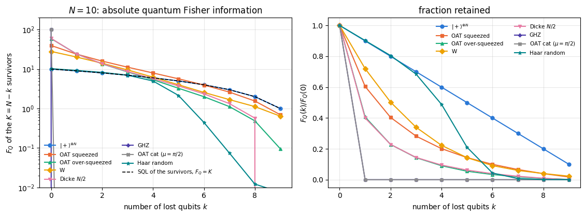
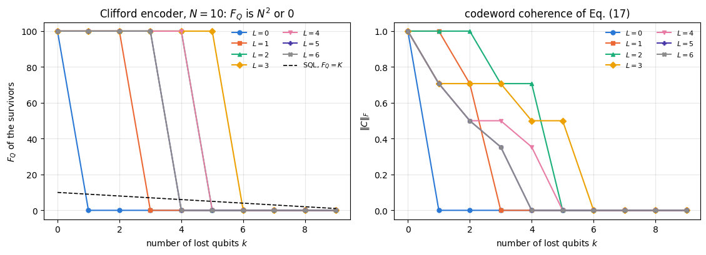
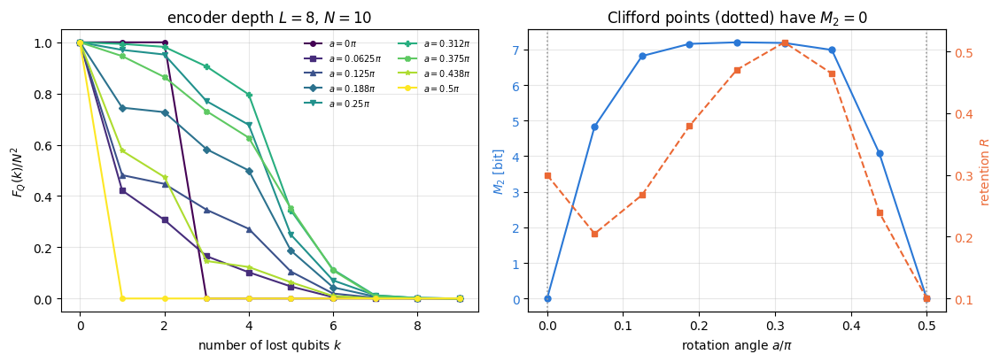
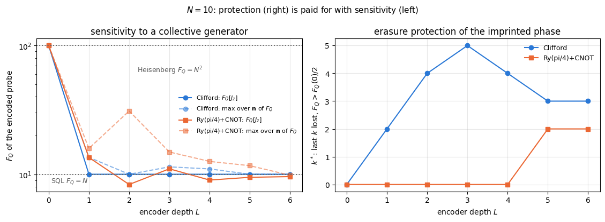

Every atom interferometer loses atoms. Ions leave the trap, photons miss the detector, a pixel goes dark. The phase \(\theta\) was imprinted on all \(N\) particles, but only \(N-k\) of them are measured, and the question a laboratory must answer before building anything is: how much of the quantum advantage survives?
The answer is not a detail. Notebook 29 found that a GHZ state — the probe that saturates the Heisenberg limit \(F_Q=N^2\) — is destroyed by the loss of one single particle. If that were the whole story, quantum-enhanced metrology would be a curiosity rather than a technology. It is not the whole story: other probes degrade gracefully, and a probe can even be encoded so that the phase it carries is immune to the loss of several particles. This notebook measures all of it.
Three questions organise the work.
The exact loss law of each probe. Losing \(k\) of \(N\) qubits turns a pure state into a mixed state of the survivors, so we need the symmetric-logarithmic-derivative (SLD) quantum Fisher information of a reduced state. We derive a short-cut that makes the computation cheap, validate it three ways, and then derive closed-form loss laws for product, GHZ, W and Dicke probes and check them against the numbers.
Structural predictors of robustness. We compare the loss curves with the entanglement entropy, with the entanglement spectrum, and with the magic (stabilizer Rényi entropy \(M_2\)) of the same states. None of the three predicts the loss curve of the probe zoo; Section 6 shows what does.
A defence against loss. Imprint the phase on a GHZ state first and then encode the result with a Clifford circuit. The encoded probe is a two-dimensional quantum error-correcting code, and the loss of \(k\) particles is an erasure. We measure a sharp all-or-nothing threshold, derive it from the logical operators of the code, check which erasure patterns it survives, and then measure the price: the same encoded state is a poor probe for a local collective generator.
Road map.
Sections 3–4 — loss as a partial trace; the reduced-state QFI, a commutator lemma that makes it a local problem for local generators, Schmidt compression, and three independent implementations that must agree.
Sections 5–6 — the exact loss laws (product, GHZ, W, Dicke, derived) and the measured loss curves of the whole probe zoo, including the one-axis-twisting family of notebooks 33–35 and Haar-random states.
Section 7 — magic: the stabilizer Rényi entropy \(M_2\) of every probe, and whether it predicts robustness.
Sections 8–11 — encoded probes: the Clifford erasure code, its threshold and the three-case rule that explains it (Section 9.1), every erasure pattern rather than only the last \(k\) qubits (Section 9.2), the tunable-magic encoder, and the protection-versus-sensitivity trade-off.
Section 12 — the entanglement spectrum of the encoders and the Marchenko–Pastur law.
What you will learn
Physics
why losing one particle of a GHZ state sets \(F_Q\) to exactly zero, and exactly what is left if the generator direction is re-optimised afterwards;
the closed-form loss law of Dicke states (and of the W state as its \(M=1\) member), derived from the hypergeometric Schmidt weights of a symmetric state;
that “how entangled” and “how much magic” are both poor predictors of loss robustness; what decides is whether the generator restricted to the survivors can still move their state;
how a quantum error-correcting code turns graceful degradation into a sharp erasure threshold, why the threshold depends on which qubits are lost, and why the same encoded state is a poor probe for a local generator.
Numerical methods
the SLD quantum Fisher information of a reduced state from the state and a single tangent vector, with no finite differences and no \(\rho_\theta\) ever built;
rank-revealing QR compression: keeping \(N-1\) qubits costs the same as keeping one;
the \(O(N4^N)\) Walsh–Hadamard algorithm for the stabilizer Rényi entropy, reused from notebook 27;
Marchenko–Pastur as a quantitative reference for an entanglement spectrum.
Implementation practice
jax.jit with static qubit indices; jax.vmap over realisations; explicit PRNG keys;
validating one quantity against three independent code paths before a single plot is drawn;
choosing a figure of merit that cannot be gamed (relative retention flatters weak probes; a loss budget does not).
Conventions. Qubit \(q\) = tensor axis \(q\); \(\vert 0\rangle\) is the \(+1\) eigenstate of \(Z\). Collective spins are \(J_a=\tfrac12\sum_q\sigma^a_q\), so the standard quantum limit is \(F_Q=N\) and the Heisenberg limit is \(F_Q=N^2\). The parameter is imprinted by \(U(\theta)=e^{-i\theta G}\). Throughout, \(k\) is the number of lost qubits and \(K=N-k\) the number of kept ones; the lost qubits are the last \(k\) unless stated otherwise.
Configuration
Every notebook of this course starts with the same cell. Choose where to run (DEVICE) and the floating-point precision (PRECISION): "double" = float64/complex128 (default, recommended for physics), "single" = float32/complex64 (half the memory, faster on consumer GPUs, but watch the round-off). All code below derives its dtypes from RDTYPE/CDTYPE and its check tolerances from TOL, so nothing else needs to change.
Code
# ==============================================================================# CONFIGURATION -- adapt to your hardware, then run the notebook top to bottom# ==============================================================================DEVICE ="auto"# "auto": use a GPU if JAX finds one, else CPU | "cpu" | "gpu"PRECISION ="double"# "double": float64/complex128 | "single": float32/complex64import osif DEVICE =="cpu": os.environ["JAX_PLATFORMS"] ="cpu"# must be set BEFORE jax is importedimport stringfrom functools import partialimport mathimport numpy as npimport jaximport jax.numpy as jnpfrom jax import lax# Precision is configurable: "double" = float64/complex128 (default; needed for long time evolutions and# tight validation), "single" = float32/complex64 (half the memory, faster on consumer GPUs).# In a notebook PRECISION is defined in the Configuration cell; for this module use the env var QE_PRECISION.PRECISION =globals().get("PRECISION", os.environ.get("QE_PRECISION", "double"))jax.config.update("jax_enable_x64", PRECISION =="double")RDTYPE = jnp.float64 if PRECISION =="double"else jnp.float32 # real dtypeCDTYPE = jnp.complex128 if PRECISION =="double"else jnp.complex64 # complex dtype of all states/operatorsTOL =1e-10if PRECISION =="double"else1e-4# tolerance for sanity checks (asserts)_LETTERS = string.ascii_letters # the 52 einsum index labels a-z, A-Zimport timeimport matplotlib.pyplot as pltif DEVICE =="gpu"and jax.default_backend() =="cpu":print("WARNING: DEVICE='gpu' requested but JAX found no GPU -- running on CPU.")print(f"JAX {jax.__version__} | backend: {jax.default_backend()} | devices: {jax.devices()}")print(f"precision: {PRECISION} -> real {RDTYPE.__name__}, complex {CDTYPE.__name__}, check tolerance TOL={TOL:g}")
JAX 0.11.0 | backend: cpu | devices: [CpuDevice(id=0)]
precision: double -> real float64, complex complex128, check tolerance TOL=1e-10
2. Engine recap and notebook helpers
From the engine we take the state constructors, apply_gate, rdm, apply_collective, spin_moments, qfi_pure, qfi_mixed, collective_dense, oat_evolve, the Clifford group and the Walsh–Hadamard transform used by the magic calculation. Everything else is built below.
Engine recap — the simulator primitives used in this notebook (click to expand)
# ==============================================================================# ENGINE RECAP: the functions of quantum_engine.py (SmoQ.jax) used in this notebook.# Each one is derived, with its mathematics and an independent check, in notebook 08b# (Chapter 3), 'Building the quantum simulator engine'.# States are rank-N tensors of shape (2,)*N; every operator acts through ONE einsum.# ==============================================================================# ----------------------------------------------------------------------------# 1. Elementary matrices: Paulis, Clifford generators, rotations# ----------------------------------------------------------------------------I2 = jnp.eye(2, dtype=CDTYPE)X = jnp.array([[0, 1], [1, 0]], dtype=CDTYPE)Y = jnp.array([[0, -1j], [1j, 0]], dtype=CDTYPE)Z = jnp.array([[1, 0], [0, -1]], dtype=CDTYPE)H = jnp.array([[1, 1], [1, -1]], dtype=CDTYPE) / jnp.sqrt(2.0) # Hadamard: Z-basis <-> X-basisS = jnp.array([[1, 0], [0, 1j]], dtype=CDTYPE) # phase gate, S^2 = ZT = jnp.array([[1, 0], [0, jnp.exp(1j* jnp.pi /4)]], dtype=CDTYPE) # pi/8 gate, T^2 = S (non-Clifford!)CNOT = jnp.array([[1, 0, 0, 0], [0, 1, 0, 0], [0, 0, 0, 1], [0, 0, 1, 0]], dtype=CDTYPE)def ry(theta):"""Rotation about y: Ry(theta) = exp(-i theta Y/2) = [[cos, -sin], [sin, cos]](theta/2) (real matrix).""" c, s = jnp.cos(theta /2), jnp.sin(theta /2)return jnp.array([[c, -s], [s, c]], dtype=CDTYPE)# ----------------------------------------------------------------------------# 2. THE core primitive: a k-qubit operator acting on a tensor through ONE einsum# ----------------------------------------------------------------------------def apply_gate(psi, U, qubits):"""Apply a k-qubit operator U to the axes `qubits` of the tensor `psi`. MATH ---- One qubit (k=1), target q: psi'[s_0,..,a,..,s_{N-1}] = sum_b U[a,b] psi[s_0,..,b,..,s_{N-1}] Two qubits (k=2), targets (q1,q2); the 4x4 matrix is reshaped to U[a1,a2,b1,b2]: psi'[.., a1, .., a2, ..] = sum_{b1,b2} U[a1,a2,b1,b2] psi[.., b1, .., b2, ..] This IS the action of (1 x .. x U x .. x 1) -- written without ever building it. EINSUM TRANSLATION (generated automatically below) ------------------ N=3, q=1 : "db,abc->adc" d = new (output) index of qubit 1 N=4, q=(1,3) : "efbd,abcd->aecf" e,f = new indices of qubits 1 and 3 Recipe: label the axes of psi with letters a,b,c,...; give every target qubit a NEW letter (the next unused ones); U carries (new letters)+(old letters of the targets); the output is psi's labels with the target letters replaced by the new ones. IMPLEMENTATION NOTES -------------------- * reshape of U: (2^k,2^k) -> (2,)*2k. Row index = (a1..ak), column = (b1..bk), and the FIRST qubit in `qubits` is the most significant bit of the small matrix, i.e. it corresponds to the LEFT factor of kron(A,B). * `qubits` may be any distinct axes in any order: non-neighbouring gates cost the same. * U need not be unitary: projectors, Kraus operators and Hamiltonian terms reuse this. * psi may be ANY tensor with those axes of size 2: a state (rank N), a density tensor (rank 2N: ket axes 0..N-1, bra axes N..2N-1), ... COST O(2^k * 2^N) operations, O(2^N) memory (dense matrix: O(4^N) both). JAX `qubits` must be static Python ints (they define the einsum string); psi and U are traced, so the function can sit inside jit / grad / vmap / scan. """ qubits =tuple(int(q) for q in qubits) k, n =len(qubits), psi.ndim U = jnp.asarray(U, dtype=psi.dtype).reshape((2,) * (2* k)) # matrix -> rank-2k tensor inp =list(_LETTERS[:n]) # labels of psi's axes new = _LETTERS[n:n + k] # fresh labels for the outputs out = inp.copy()for a, q inzip(new, qubits): out[q] = a # target axes get the new labels sub =f"{''.join(new)}{''.join(inp[q] for q in qubits)},{''.join(inp)}->{''.join(out)}"return jnp.einsum(sub, U, psi)# ----------------------------------------------------------------------------# 3. State preparation# ----------------------------------------------------------------------------def zero_state(N):"""|00...0>: a rank-N tensor of zeros with a single 1 at index (0,0,...,0). JAX arrays are immutable: `.at[idx].set(v)` returns an updated COPY (functional style)."""return jnp.zeros((2,) * N, dtype=CDTYPE).at[(0,) * N].set(1.0)_KETS = {"0": [1, 0], "1": [0, 1], "+": [1, 1], "-": [1, -1], "r": [1, 1j], "l": [1, -1j]}def product_state(spec):"""Product state from a string, one character per qubit: product_state('01+-') = |0>|1>|+>|->. ('r','l' = the +1/-1 eigenstates of Y.) MATH psi[s_0,...,s_{N-1}] = v0[s_0] v1[s_1] ... v_{N-1}[s_{N-1}] EINSUM an outer product = einsum with NO summed index: "a,b,c->abc". A product state needs only 2N numbers; entanglement is what makes all 2^N necessary. """ vecs = [jnp.array(_KETS[c], dtype=CDTYPE) / jnp.linalg.norm(jnp.array(_KETS[c], dtype=CDTYPE))for c in spec] n =len(vecs) sub =",".join(_LETTERS[i] for i inrange(n)) +"->"+ _LETTERS[:n]return jnp.einsum(sub, *vecs)def basis_state(bits):"""Computational basis state |b_0 b_1 ... b_{N-1}> from a list of bits.""" bits =tuple(int(b) for b in bits)return jnp.zeros((2,) *len(bits), dtype=CDTYPE).at[bits].set(1.0)def ghz_state(N):"""GHZ state (|0...0> + |1...1>)/sqrt(2): two non-zero entries of the rank-N tensor.""" psi = jnp.zeros((2,) * N, dtype=CDTYPE)return psi.at[(0,) * N].set(1/ jnp.sqrt(2.0)).at[(1,) * N].set(1/ jnp.sqrt(2.0))def dicke_state(N, k):"""Symmetric Dicke state |D_N^k>: equal superposition of all basis states with exactly k ones. Implementation: mask of the flat indices with popcount == k, normalised by sqrt(binom(N,k)).""" idx = np.arange(2** N) pop = np.array([bin(i).count("1") for i in idx]) v = (pop == k).astype(np.complex128)return jnp.asarray(v / np.linalg.norm(v), dtype=CDTYPE).reshape((2,) * N)def w_state(N):"""W state = Dicke state with one excitation: (|10..0> + |01..0> + ... + |0..01>)/sqrt(N)."""return dicke_state(N, 1)def haar_state(key, N):"""Haar-random pure state: a complex Gaussian vector, normalised. (The Gaussian measure is unitarily invariant, so the direction is uniformly distributed.) `key` is an explicit JAX PRNG key -- same key, same state: reproducible science.""" k1, k2 = jax.random.split(key) v = jax.random.normal(k1, (2,) * N) +1j* jax.random.normal(k2, (2,) * N)return (v / jnp.linalg.norm(v)).astype(CDTYPE)# ----------------------------------------------------------------------------# 4. Reduced density matrices & observables (matrix-free)# ----------------------------------------------------------------------------def rdm(psi, keep):"""Reduced density matrix of the qubits `keep` from a PURE state: rho_A = Tr_B |psi><psi|. MATH rho_A[a, a'] = sum_{b} psi[a, b] psi^*[a', b] (a: indices of A, b: of the rest B) EINSUM TRANSLATION N=3, keep=(0,): "abc,Abc->aA" with operands psi, psi^* * letters of B (b,c) appear in BOTH operands and not in the output -> summed = traced out * the kept axis gets a different letter in the second operand -> stays open (a and A) The full |psi><psi| (4^N numbers) is never formed; cost O(2^N 2^|A|). Returns a (2^|A|, 2^|A|) matrix with row/column order following `keep`. """ keep =tuple(int(q) for q in keep) n, k = psi.ndim, len(keep) a =list(_LETTERS[:n]) b = a.copy()for new, q inzip(_LETTERS[n:n + k], keep): b[q] = new sub =f"{''.join(a)},{''.join(b)}->{''.join(a[q] for q in keep)}{''.join(b[q] for q in keep)}"return jnp.einsum(sub, psi, jnp.conj(psi)).reshape(2** k, 2** k)# ----------------------------------------------------------------------------# 5. State characteristics: entropies, fidelity, negativity# ----------------------------------------------------------------------------def schmidt_values(psi, subsystem):"""Schmidt coefficients of the bipartition A|B with A = `subsystem`. MATH Group the tensor axes into a matrix M[(a),(b)] = psi[a,b] of shape (2^|A|, 2^|B|). Its SVD M = U diag(lambda) V^dag IS the Schmidt decomposition |psi> = sum_k lambda_k |u_k>_A |v_k>_B , rho_A has eigenvalues lambda_k^2. IMPLEMENTATION transpose (A axes first) -> reshape -> svd. No density matrix needed. """ A =tuple(int(q) for q in subsystem) B =tuple(q for q inrange(psi.ndim) if q notin A) M = jnp.transpose(psi, A + B).reshape(2**len(A), -1)return jnp.linalg.svd(M, compute_uv=False)def entanglement_entropy(psi, subsystem, base=2.0):"""Entanglement entropy S_A = -sum_k p_k log p_k with p_k = lambda_k^2 (squared Schmidt values). Product state: 0. Bell/GHZ across any cut: 1 bit. Random state: ~ |A| - 1/(2 ln2) 2^{|A|-|B|} (Page).""" p = jnp.clip(schmidt_values(psi, subsystem) **2, 1e-16, None)return-jnp.sum(p * jnp.log(p)) / jnp.log(base)# ----------------------------------------------------------------------------# 11. Collective spins, spin squeezing, quantum Fisher information# ----------------------------------------------------------------------------def apply_collective(psi, P, qubits=None):"""(sum_q P_q)|psi> for a single-qubit operator P -- N einsums, O(N 2^N). Note: NO factor 1/2 here; the collective spin is J_a = (1/2) sum_q sigma^a_q.""" qubits =range(psi.ndim) if qubits isNoneelse qubits out = jnp.zeros_like(psi)for q in qubits: out = out + apply_gate(psi, P, [q])return outdef qfi_pure(psi, P=Z, qubits=None):"""Quantum Fisher information of a pure state for the phase imprinted by exp(-i theta J), J = (1/2) sum_q P_q: F_Q = 4 Var(J) = <G^2> - <G>^2 with G = sum_q P_q = 2J. Cramer-Rao: Delta theta >= 1/sqrt(M F_Q). Product states F_Q <= N (standard quantum limit); GHZ: F_Q = N^2 (Heisenberg limit). Matrix-free: |phi> = G|psi>, <G^2> = <phi|phi>, <G> = <psi|phi>.""" phi = apply_collective(psi, P, qubits)return jnp.real(jnp.vdot(phi, phi)) - jnp.real(jnp.vdot(psi, phi)) **2def qfi_mixed(rho_mat, G_mat, tol=1e-12):"""QFI of a MIXED state (symmetric-logarithmic-derivative formula), rho = sum_m l_m |m><m|: F_Q = 2 sum_{m,n : l_m+l_n>0} (l_m - l_n)^2/(l_m + l_n) |<m|G|n>|^2 (G = generator, e.g. J). Reduces to 4 Var(G) for pure states. Dense eigendecomposition -> use on small / reduced states.""" lam, v = jnp.linalg.eigh(rho_mat) G = v.conj().T @ G_mat @ v num = (lam[:, None] - lam[None, :]) **2 den = lam[:, None] + lam[None, :]return2* jnp.sum(jnp.where(den > tol, num / jnp.where(den > tol, den, 1.0), 0.0) * jnp.abs(G) **2)def collective_dense(P, n):"""Dense J = (1/2) sum_q P_q on n qubits (input of `qfi_mixed`), built from the matrix-free action on the basis vectors (vmap), exactly like `dense_hamiltonian`.""" eye = jnp.eye(2** n, dtype=CDTYPE).reshape((2** n,) + (2,) * n)return0.5* jax.vmap(lambda e: apply_collective(e, P).reshape(-1))(eye).Tdef spin_moments(psi):"""Mean collective spin <J_a> (shape 3) and symmetrised covariance matrix C_ab = (1/2)<J_a J_b + J_b J_a> - <J_a><J_b> (shape 3x3). Trick: |phi_a> = J_a|psi> => <J_a J_b> = <phi_a|phi_b>, and its real part is the symmetrised moment.""" phis = [0.5* apply_collective(psi, P) for P in (X, Y, Z)] mean = jnp.stack([jnp.real(jnp.vdot(psi, p)) for p in phis]) second = jnp.stack([jnp.stack([jnp.real(jnp.vdot(a, b)) for b in phis]) for a in phis])return mean, second - jnp.outer(mean, mean)def spin_squeezing(psi):"""Wineland spin-squeezing parameter xi^2_R = N * min_{n_perp} Var(J_{n_perp}) / |<J>|^2 . xi^2 < 1: phase sensitivity beyond the standard quantum limit (and the state is entangled). Implementation: project the 3x3 covariance onto the plane perpendicular to the mean spin and take the smaller eigenvalue of the resulting 2x2 matrix.""" N = psi.ndim mean, cov = spin_moments(psi) L = jnp.linalg.norm(mean) n = mean / L a = jnp.where(jnp.abs(n[2]) <0.9, jnp.array([0.0, 0.0, 1.0]), jnp.array([1.0, 0.0, 0.0])) e1 = jnp.cross(n, a) e1 = e1 / jnp.linalg.norm(e1) e2 = jnp.cross(n, e1) B = jnp.stack([e1, e2]) vmin = jnp.linalg.eigvalsh(B @ cov @ B.T)[0]return N * vmin / L **2def oat_evolve(psi, chi_t):"""One-axis twisting exp(-i chi t J_z^2) applied EXACTLY. J_z is diagonal in the computational basis with eigenvalue m(s) = sum_q (1/2 - s_q), so the evolution multiplies each amplitude by a phase exp(-i chi t m^2): O(2^N), no Trotter error, no gates. m(s) is assembled by BROADCASTING N arrays of shape (1,..,2,..,1) -- a tensor-network-free way of writing a sum over sites. [Note: chi sum_{i<j} Z_i Z_j = 2 chi J_z^2 - chi N/2.]""" N = psi.ndim m =sum(jnp.array([0.5, -0.5]).reshape([2if a == q else1for a inrange(N)]) for q inrange(N))return psi * jnp.exp(-1j* chi_t * m **2)# ----------------------------------------------------------------------------# 12. Random unitaries, Clifford group, brick-wall circuits# ----------------------------------------------------------------------------def haar_unitary(key, d):"""Haar-random d x d unitary (Mezzadri's recipe): QR-decompose a complex Ginibre matrix and fix the phases of R's diagonal -- without the phase fix the distribution is NOT Haar.""" k1, k2 = jax.random.split(key) G = (jax.random.normal(k1, (d, d)) +1j* jax.random.normal(k2, (d, d))) / jnp.sqrt(2.0) Q, R = jnp.linalg.qr(G) ph = jnp.diagonal(R) / jnp.abs(jnp.diagonal(R))return Q * ph[None, :]def brickwall(key, psi, depth, periodic=False):"""Random brick-wall circuit: layers of Haar-random 2-qubit gates on even bonds, then odd bonds, ... Depth ~ N turns a product state into a (nearly) Haar-random state: volume-law entanglement (Page).""" N = psi.ndimfor layer inrange(depth): bonds = [(i, i +1) for i inrange(layer %2, N -1, 2)]if periodic and N %2==0and layer %2==1: bonds.append((N -1, 0)) key, *ks = jax.random.split(key, len(bonds) +1)for k, b inzip(ks, bonds): psi = apply_gate(psi, haar_unitary(k, 4), b)return psi# ----------------------------------------------------------------------------# 14. Stabilizer Renyi entropy ("magic") via the fast Walsh-Hadamard transform# ----------------------------------------------------------------------------def _wht_all_axes(f):"""Unnormalised Walsh-Hadamard transform over all N binary axes: F[b] = sum_s (-1)^{b.s} f[s] In tensor language it is simply [[1,1],[1,-1]] applied to EVERY axis: N einsums, O(N 2^N).""" Hun = jnp.array([[1, 1], [1, -1]], dtype=f.dtype)for q inrange(f.ndim): f = apply_gate(f, Hun, [q])return f
Code
# ==============================================================================# PLOT STYLE + small helpers used throughout this notebook# ==============================================================================PALETTE = ["#2a78d6", "#eb6834", "#1baf7a", "#eda100", "#e87ba4", "#4a3aa7", "#8c8c8c", "#00868b"]MARKERS = ["o", "s", "^", "D", "v", "P", "X", "*"]plt.rcParams.update({"axes.prop_cycle": plt.cycler(color=PALETTE), "axes.grid": True,"grid.alpha": 0.3, "font.size": 10, "legend.frameon": False})def max_abs(a):"""Largest absolute entry of an array, as a Python float."""returnfloat(jnp.max(jnp.abs(jnp.asarray(a))))def timed(f, *args, budget=0.3, min_reps=3, max_reps=200):"""Return (result, compile_time, best_run_time); JAX is asynchronous, so every value is forced with `block_until_ready`, and we report the MINIMUM over repetitions (on a shared machine the mean measures the operating system, the minimum measures the code).""" t0 = time.time() out = jax.block_until_ready(f(*args)) t_compile = time.time() - t0 best, n, t_start = np.inf, 0, time.time()while n < min_reps or (time.time() - t_start < budget and n < max_reps): t0 = time.time() out = jax.block_until_ready(f(*args)) best =min(best, time.time() - t0) n +=1return out, t_compile, best
3. Losing particles: the state of the survivors
3.1 The set-up
The probe \(\vert\psi\rangle\) of \(N\) qubits is prepared, the phase is imprinted on all of them,
and then \(k\) qubits are lost. “Lost” means: they leave the experiment and nobody ever measures them. Quantum mechanics says that the state of what remains is the partial trace over the lost qubits,
Everything in this notebook is an evaluation of Eq. (2) for a different \((\rho_A,\partial_\theta\rho_A)\) pair.
3.2 A lemma that makes local generators easy
Most generators in metrology are sums of single-qubit terms, \(G=\sum_q g_q\). Split the sum into the kept and the lost qubits, \(G=G_A\otimes\mathbb 1_B+\mathbb 1_A\otimes G_B\). Then
The first term is \(-i\left[G_A,\mathrm{Tr}_B\rho\right]\), because an operator acting only on \(A\) can be pulled out of a trace over \(B\). The second term vanishes: \(\mathrm{Tr}_B\left((\mathbb 1\otimes G_B)\rho\right) =\mathrm{Tr}_B\left(\rho(\mathbb 1\otimes G_B)\right)\) by cyclicity of the trace inside\(B\). Hence
— the survivors evolve under the restriction of the generator to the survivors, and nothing else. Two consequences we shall use constantly:
the QFI of the survivors is simply \(F_Q[\rho_A,G_A]\), the ordinary mixed-state QFI of a \(2^K\)-dimensional state;
if the generator has no support on the kept qubits, \(G_A=0\) and the survivors carry no information at all.
3.3 Generators that are not local sums
Equation (3) fails as soon as \(G\) is not a sum of local terms — and Section 8 needs exactly that case, because encoding a probe with a unitary \(V\) turns the generator into \(V G V^\dagger\), a complicated many-body operator. The general route uses a tangent vector. Write the state and its derivative as matrices:
(The first equality is \(\partial_\theta\rho=-i[G,\rho]\) at \(\theta=0\); the second is the observation that \(\mathrm{Tr}_B\left(\vert\phi\rangle\langle\psi\vert\right)=\Phi\Psi^\dagger\) in the matrix view.)
The value of \(\theta\) matters for non-local generators. For a local generator Eq. (3) gives \(\rho_A(\theta)=e^{-i\theta G_A}\rho_Ae^{i\theta G_A}\), a unitary orbit, and the QFI does not depend on \(\theta\) (notebook 30, Section 5.5(a)), so \(\theta=0\) is no restriction. For a generator that does not split into a kept and a lost part, \(\rho_A(\theta)\) is not a unitary orbit and its QFI may depend on \(\theta\). Equation (4) holds at any \(\theta\) if \(\vert\psi\rangle\) is replaced by \(\vert\psi_\theta\rangle\) and \(\vert\phi\rangle\) by \(G\vert\psi_\theta\rangle\); Sections 8–11 evaluate it at \(\theta=0\) and Section 9.2 measures what changes at \(\theta\neq0\).
Only \(\vert\phi\rangle=G\vert\psi\rangle\) is needed; whatever \(G\) is, if we can apply it we can compute the QFI of every subsystem. This is the pattern used for the rest of the notebook: carry the tangent vector alongside the state.
3.4 Schmidt compression
Equation (2) needs an eigendecomposition of \(\rho_A\), costing \(O(8^K)\). Losing one qubit would then be the most expensive case, even though it barely mixes the state. But \(\rho_A=\Psi\Psi^\dagger\) has rank at most \(2^{N-K}\), and both \(\rho_A\) and \(\partial_\theta\rho_A\) live inside the column span of \(\left[\,\Psi\ \ \Phi\,\right]\), a subspace of dimension at most \(2\cdot2^{N-K}\). A thin QR decomposition \(\left[\,\Psi\ \ \Phi\,\right]=QR\) gives an isometry onto it; projecting with \(Q^\dagger\) leaves the non-zero spectrum and every matrix element of Eq. (2) unchanged and drops the cost to \(O\!\left(8^{\min(K,N-K)}\right)\). This is the routine derived in notebook 29, Section 15; we copy it and generalise it to an arbitrary tangent vector.
Code
# ==============================================================================# STEP 1: the reduced-state QFI -- three routines# (derived in notebook 29 Sec. 15 and notebook 30 Sec. 6; generalised here to# an arbitrary tangent vector |phi> = G|psi>)# ==============================================================================def qfi_from_derivative(rho, drho, tol=1e-12):"""SLD quantum Fisher information of a state and its derivative -- Eq. (2). MATH F_Q = 2 sum_{m,n} |<m|drho|n>|^2 / (lam_m + lam_n) over lam_m + lam_n > tol, with rho = sum_m lam_m |m><m|. (Derived in notebook 30, Sec. 5.) COST one Hermitian eigendecomposition, O(dim^3). """ lam, v = jnp.linalg.eigh(rho) D = v.conj().T @ drho @ v den = lam[:, None] + lam[None, :] ok = den > tolreturn2* jnp.sum(jnp.where(ok, jnp.abs(D) **2/ jnp.where(ok, den, 1.0), 0.0))def block_qfi(psi, phi, keep, compress=True, tol=1e-12):"""QFI of the reduced state of the qubits `keep`, for ANY generator, from the tangent vector. MATH Psi = psi with the kept axes grouped first, reshaped to (2^K, 2^{N-K}); Phi = likewise for |phi> = G|psi>. rho_A = Psi Psi^dag, d rho_A/d theta = -i (T - T^dag), T = Phi Psi^dag. [Eq. (4)] IMPL `keep` may be ANY set of qubits (a transpose puts them first). When 2^K > 2^{N-K} a thin QR of [Psi | Phi] projects onto the active subspace: same spectrum, same matrix elements, smaller matrices. COST O(8^min(K, N-K)) for the eigendecomposition; O(2^N) memory. JAX `keep` is a tuple of static Python ints (it fixes the transpose and the shapes); psi, phi are traced. """ keep =tuple(int(q) for q in keep) rest =tuple(q for q inrange(psi.ndim) if q notin keep) dA =2**len(keep) Psi = jnp.transpose(psi, keep + rest).reshape(dA, -1) Phi = jnp.transpose(phi, keep + rest).reshape(dA, -1)if compress and Psi.shape[0] > Psi.shape[1]: Q, _ = jnp.linalg.qr(jnp.concatenate([Psi, Phi], axis=1)) # thin QR -> active subspace Psi, Phi = Q.conj().T @ Psi, Q.conj().T @ Phi T_ = Phi @ Psi.conj().Treturn qfi_from_derivative(Psi @ Psi.conj().T, -1j* (T_ - T_.conj().T), tol)def pauli_direction(n):"""Single-qubit matrix n.sigma = n_x X + n_y Y + n_z Z for a direction n (notebook 29, Sec. 8).""" n = jnp.asarray(n, dtype=CDTYPE)return n[0] * X + n[1] * Y + n[2] * Zdef collective_tangent(psi, n):"""|phi> = (n.J)|psi> with J_a = (1/2) sum_q sigma^a_q -- matrix-free, N einsums, O(N 2^N)."""return0.5* apply_collective(psi, pauli_direction(n))def qfi_matrix(psi):"""3x3 collective QFI matrix, Fcal_ab = 4 C_ab, with F_Q(n) = n^T Fcal n (notebook 29, Sec. 12).""" _, cov = spin_moments(psi)return4.0* covdef optimal_direction(psi):"""Best collective generator direction and the QFI it gives: (F_max, n_opt) = largest eigenpair of Fcal.""" w, v = jnp.linalg.eigh(qfi_matrix(psi))return w[-1], v[:, -1]def clean_direction(n):"""Fix the irrelevant global sign of an eigenvector and round numerical zeros away, for printing.""" n = np.array(n, dtype=float) n = n * np.sign(n[int(np.argmax(np.abs(n)))])return np.where(np.abs(n) <1e-9, 0.0, n)
3.5 Checkpoint: four routes to the same number
Before a single physical statement we check block_qfi against everything else we have:
no loss (\(K=N\)) must reproduce the pure-state value \(4\,\mathrm{Var}(G)\);
the compressed and uncompressed branches must agree bit for bit in exact arithmetic;
for a collective generator, Eq. (3) says the answer must equal the engine’s qfi_mixed applied to the dense reduced density matrix with the restricted generator \(G_A\) — a completely different code path;
a brute-force route that builds \(\rho_A(\theta)\) from the phase-imprinted state and differentiates it with jax.jacfwd — an independent test of Eq. (4). (This checkpoint uses a collective generator; Section 8 repeats the brute-force test for the non-local generators of encoded probes.)
Code
# ==============================================================================# CHECKPOINT 1: block_qfi against 4 Var(G), against qfi_mixed(rho_A, G_A), and against jax.jacfwd# ==============================================================================N_CHK =7chk_states = {"GHZ": ghz_state(N_CHK), "W": w_state(N_CHK),"Dicke 3": dicke_state(N_CHK, 3), "Haar": haar_state(jax.random.PRNGKey(2), N_CHK)}n_chk = np.array([1.0, 2.0, -2.0]) /3.0# a tilted direction, nothing special about itprint(f"N = {N_CHK}, generator G = n.J with n = {n_chk}\n")print(f"{'state':>8s}{'K':>3s} | {'compressed':>13s}{'uncompressed':>13s}{'qfi_mixed(G_A)':>15s} "f"{'jacfwd':>13s}{'max err':>9s}")err_all =0.0for name, psi in chk_states.items(): phi = collective_tangent(psi, n_chk)for K in (2, 4, 6, 7): a =float(block_qfi(psi, phi, range(K), compress=True)) b =float(block_qfi(psi, phi, range(K), compress=False)) c =float(qfi_mixed(rdm(psi, range(K)), collective_dense(pauli_direction(n_chk), K)))def rho_A_of_theta(th, K=K, psi=psi): # brute force: encode, trace, differentiate U = jnp.cos(th /2) * I2 -1j* jnp.sin(th /2) * pauli_direction(n_chk) p = psifor q inrange(N_CHK): p = apply_gate(p, U, [q])return rdm(p, range(K)) d =float(qfi_from_derivative(rho_A_of_theta(0.0), jax.jacfwd(rho_A_of_theta)(0.0))) e =max(abs(a - b), abs(a - c), abs(a - d)) err_all =max(err_all, e)print(f"{name:>8s}{K:3d} | {a:13.8f}{b:13.8f}{c:15.8f}{d:13.8f}{e:9.1e}")# K = N must be 4 Var(G) f_pure =float(qfi_pure(psi, pauli_direction(n_chk))) err_all =max(err_all, abs(float(block_qfi(psi, phi, range(N_CHK))) - f_pure))print(f"\nworst discrepancy over all four routes and all states: {err_all:.2e}")assert err_all <1e4* TOL
N = 7, generator G = n.J with n = [ 0.33333333 0.66666667 -0.66666667]
state K | compressed uncompressed qfi_mixed(G_A) jacfwd max err
Haar 7 | 7.57330411 7.57330411 7.57330411 7.57330411 7.1e-15
worst discrepancy over all four routes and all states: 5.33e-14
Four independent code paths agree to better than \(10^{-13}\). The third column tests the commutator lemma of Eq. (3). qfi_mixed never sees the lost qubits at all — it is handed the \(2^K\times2^K\) reduced density matrix and the collective spin operator of the \(K\) survivors — and it returns the same number as a calculation that starts from the full \(N\)-qubit state. The fourth column tests Eq. (4) by brute force: build \(\rho_A(\theta)\) from the phase-imprinted state and let forward-mode automatic differentiation produce \(\partial_\theta\rho_A\). A wrong factor in the tangent vector (for example \(\sum_q\sigma^{\mathbf n}_q\) instead of \(\mathbf n\cdot\mathbf J\)) would show up as a factor \(4\) between the first and the last column.
Numerical practice. A new formula earns trust by agreeing with every independent route available. Four routes with four different failure modes (compression, a commutator identity, a dense eigensolver, automatic differentiation) is the minimum before a plot is allowed to appear.
4. Exact loss laws
Numbers without a formula behind them are hard to trust. Four probe families admit a closed-form loss law, and we derive all four before measuring anything.
4.1 Product states: \(F_Q=K\)
For \(\vert\psi\rangle=\bigotimes_q\vert\psi_q\rangle\) the partial trace factorises, \(\rho_A=\bigotimes_{q\in A}\vert\psi_q\rangle\langle\psi_q\vert\) — the survivors are still a pure product state of \(K\) qubits, untouched. By the standard quantum limit proof of notebook 29,
with equality when every Bloch vector is perpendicular to \(\mathbf n\). A product probe loses exactly the share of the lost particles and nothing else. It is the benchmark every other probe is measured against.
4.2 GHZ: exactly zero, and exactly \(K\) after re-optimisation
Trace one qubit out of \(\vert\mathrm{GHZ}\rangle=\left(\vert0\rangle^{\otimes N}+\vert1\rangle^{\otimes N}\right)/\sqrt2\). The two branches leave orthogonal states \(\vert0\rangle,\vert1\rangle\) on the lost qubit, so the cross terms die and
With the GHZ generator \(G=J_z\) both terms are eigenstates of \(G_A=J_z^A\), hence \(\left[G_A,\rho_A\right]=0\), hence \(\partial_\theta\rho_A=0\) by Eq. (3) and \(F_Q=0\). The QFI is exactly zero for any \(k\ge1\).
What if the experimenter, knowing a qubit was lost, re-optimises the generator direction? Take \(G=J_x\). Now \(J_x\vert0\rangle^{\otimes K}=\tfrac{\sqrt K}{2}\vert D_K^1\rangle\) and \(J_x\vert1\rangle^{\otimes K}=\tfrac{\sqrt K}{2}\vert D_K^{K-1}\rangle\), where \(\vert D_K^m\rangle\) is the Dicke state with \(m\) excitations; for \(K\ge2\) both targets are orthogonal to the support of \(\rho_A\). By Eq. (3) the matrix elements are \(\langle m\vert\partial_\theta\rho_A\vert n\rangle=-i(\lambda_n-\lambda_m)\langle m\vert G_A\vert n\rangle\). Equation (2) has one contributing pair for each branch, \(\lambda_m=\tfrac12\) against \(\lambda_n=0\), and each pair is counted twice:
Any direction in the \(xy\) plane gives the same value, and \(J_z\) gives \(0\), so \(K\) is also the maximum over all collective directions (the \(3\times3\) QFI matrix of \(\rho_A\) has eigenvalues \(K,K,0\)). A GHZ state that has lost a particle is worth exactly the standard quantum limit of its survivors — no better than \(K\) independent atoms, no worse. All of the Heisenberg advantage lived in a single global coherence, and a single lost particle carried it away.
4.3 Dicke states: a hypergeometric loss law
The symmetric Dicke state \(\vert D_N^M\rangle\) (equal superposition of all bit strings with \(M\) ones) splits along any bipartition into
because choosing which \(M\) of the \(N\) qubits are excited is the same as choosing \(m\) of the \(K\) kept ones and \(M-m\) of the \(k\) lost ones. This is the Schmidt decomposition (the two factors are orthonormal families), so the weights \(w_m\) — a hypergeometric distribution — are the eigenvalues of \(\rho_A\), and
Take \(G=J_x\) (the optimal choice for Dicke states, which are \(J_z\) eigenstates). In the angular-momentum algebra with \(j=K/2\) and \(m_z=K/2-m\), \(J_x=\tfrac12(J_++J_-)\) connects only neighbouring Dicke levels, with
The W state is \(\vert D_N^1\rangle\). Then \(w_0=k/N\), \(w_1=K/N\) and all other weights vanish, so Eq. (11) has two terms: \(m=0\) gives \(K(w_0-w_1)^2/(w_0+w_1)=K(1-2K/N)^2\), and \(m=1\) gives \(2(K-1)w_1=2(K-1)K/N\). Hence
At \(K=N\) this is \(N+2(N-1)=3N-2\), the known W-state value quoted in notebook 29 — a useful consistency check on the algebra. Let us now check Eqs. (5), (7), (11) and (12) against the numerics.
Code
# ==============================================================================# STEP 2: the analytic loss laws, and the measurement that must reproduce them# ==============================================================================def dicke_loss_qfi(N, M, K):"""Analytic F_Q of Tr_B |D_N^M><D_N^M| with the collective generator J_x of the K kept qubits -- Eq. (11). MATH Schmidt weights w_m = C(K,m) C(N-K, M-m) / C(N,M) (hypergeometric, Eq. 8); |<D^{m+1}|J_x|D^m>|^2 = (m+1)(K-m)/4 (Eq. 10); F_Q = sum_m (m+1)(K-m) (w_m - w_{m+1})^2 / (w_m + w_{m+1}). Pure Python/NumPy: this is a REFERENCE, not a production routine. """from math import comb k = N - K w = np.array([comb(K, m) * comb(k, M - m) / comb(N, M) if0<= M - m <= k else0.0for m inrange(K +1)]) tot =0.0for m inrange(K): s = w[m] + w[m +1]if s >1e-15: tot += (m +1) * (K - m) * (w[m] - w[m +1]) **2/ sreturn totN_LAW =10print(f"N = {N_LAW}: measured F_Q of the K = N-k survivors, against the closed forms of Section 4\n")print(f"{'k':>2s}{'K':>3s} | {'prod (=K)':>19s} | {'GHZ, J_z (=0)':>13s} | {'GHZ, J_x (=K)':>19s} "f"| {'W, Eq.(12)':>21s} | {'Dicke N/2, Eq.(11)':>25s}")err_law =0.0for k inrange(N_LAW): K = N_LAW - k p_prod = product_state("+"* N_LAW) m_prod =float(block_qfi(p_prod, collective_tangent(p_prod, (0, 1, 0)), range(K))) p_ghz = ghz_state(N_LAW) m_gz =float(block_qfi(p_ghz, collective_tangent(p_ghz, (0, 0, 1)), range(K))) m_gx =float(block_qfi(p_ghz, collective_tangent(p_ghz, (1, 0, 0)), range(K))) p_w = w_state(N_LAW) m_w =float(block_qfi(p_w, collective_tangent(p_w, (1, 0, 0)), range(K))) a_w = K * (1-2* K / N_LAW) **2+2* K * (K -1) / N_LAW p_d = dicke_state(N_LAW, N_LAW //2) m_d =float(block_qfi(p_d, collective_tangent(p_d, (1, 0, 0)), range(K))) a_d = dicke_loss_qfi(N_LAW, N_LAW //2, K) a_gx = K if K >=2else0.0# Eq. (7) needs K >= 2 (for K = 1, J_x maps |0> to |1>: inside the support) err_law =max(err_law, abs(m_prod - K), abs(m_w - a_w), abs(m_d - a_d),*( (abs(m_gz), abs(m_gx - a_gx)) if k >0else (0.0,) )) # Eqs. (6)-(7) apply only after a lossprint(f"{k:2d}{K:3d} | {m_prod:9.5f} vs {K:6.1f} | {m_gz:13.2e} | {m_gx:9.5f} vs {a_gx:6.1f} "f"| {m_w:9.5f} vs {a_w:9.5f} | {m_d:11.6f} vs {a_d:11.6f}")print(f"\nworst deviation from the closed forms: {err_law:.2e}")assert err_law <1e4* TOL
N = 10: measured F_Q of the K = N-k survivors, against the closed forms of Section 4
k K | prod (=K) | GHZ, J_z (=0) | GHZ, J_x (=K) | W, Eq.(12) | Dicke N/2, Eq.(11)
0 10 | 10.00000 vs 10.0 | 1.00e+02 | 10.00000 vs 10.0 | 28.00000 vs 28.00000 | 60.000000 vs 60.000000
1 9 | 9.00000 vs 9.0 | 0.00e+00 | 9.00000 vs 9.0 | 20.16000 vs 20.16000 | 24.000000 vs 24.000000
2 8 | 8.00000 vs 8.0 | 0.00e+00 | 8.00000 vs 8.0 | 14.08000 vs 14.08000 | 13.714286 vs 13.714286
3 7 | 7.00000 vs 7.0 | 0.00e+00 | 7.00000 vs 7.0 | 9.52000 vs 9.52000 | 8.666667 vs 8.666667
4 6 | 6.00000 vs 6.0 | 0.00e+00 | 6.00000 vs 6.0 | 6.24000 vs 6.24000 | 5.696970 vs 5.696970
5 5 | 5.00000 vs 5.0 | 0.00e+00 | 5.00000 vs 5.0 | 4.00000 vs 4.00000 | 3.736264 vs 3.736264
6 4 | 4.00000 vs 4.0 | 0.00e+00 | 4.00000 vs 4.0 | 2.56000 vs 2.56000 | 2.354978 vs 2.354978
7 3 | 3.00000 vs 3.0 | 0.00e+00 | 3.00000 vs 3.0 | 1.68000 vs 1.68000 | 1.333333 vs 1.333333
8 2 | 2.00000 vs 2.0 | 0.00e+00 | 2.00000 vs 2.0 | 1.12000 vs 1.12000 | 0.571429 vs 0.571429
9 1 | 1.00000 vs 1.0 | 0.00e+00 | 0.00000 vs 0.0 | 0.64000 vs 0.64000 | 0.000000 vs 0.000000
worst deviation from the closed forms: 3.55e-14
Every closed form of Section 4 is reproduced to machine precision, including the two least obvious ones: the GHZ state re-optimised to \(J_x\) gives \(F_Q\) exactly equal to \(K\) for every \(k\le N-2\) (and \(0\) at \(k=N-1\): for a single survivor \(\rho_A=\mathbb 1/2\), and \(J_x\) maps \(\vert0\rangle\) to \(\vert1\rangle\), inside the support), and the hypergeometric Dicke law reproduces numbers such as \(F_Q=13.714286=96/7\) at \(K=8\), \(N=10\).
The physics is already visible in the table. The product probe pays exactly \(1\) per lost qubit. The GHZ probe pays everything on the first loss: from \(F_Q=N^2=100\) to \(0\) with \(J_z\), or to \(K=9\) — the standard quantum limit of the survivors — if the direction is re-optimised. The W and Dicke probes lose a finite fraction per particle and stay above the product benchmark for a while.
Physics insight. The GHZ collapse needs no noise acting on the survivors. The lost qubit is a perfect which-branch detector: \(\vert0\rangle\) against \(\vert1\rangle\) tells the environment, with certainty, which arm of the superposition the system took, and a superposition whose branches have been distinguished is a classical mixture. Everything in Sections 8–10 is an attempt to build a probe whose lost particles do not say which branch was taken.
5. The probe zoo under loss
We now measure the loss curve of the standard probe families, each with the generator that suits it: the optimal collective direction \(\mathbf n_{\rm opt}\) of the intact probe, read off the \(3\times3\) QFI matrix of notebook 29. The one-axis-twisting family of notebooks 33–35 supplies three of the probes: \(\vert+\rangle^{\otimes N}\) twisted by \(e^{-i\mu J_z^2}\) at the optimal squeezing angle \(\mu_{\rm opt}\), at \(\mu=0.5\) (over-squeezed) and at \(\mu=\pi/2\) (the GHZ-like cat).
Two figures of merit are printed, and the difference between them matters.
Relative retention\(R=\frac1N\sum_{k=0}^{N-1}F_Q(k)/F_Q(0)\) — the average fraction kept. It is the intuitive measure, and it systematically flatters weak probes: a state that starts at the standard quantum limit has little to lose.
Loss budget\(k_{\rm SQL}=\max\{k:F_Q(k)>K=N-k\}\) — how many particles may be lost while the survivors still beat their own standard quantum limit (and \(0\) if the inequality never holds; \(k_{\rm SQL}=0\) therefore covers both “only the intact probe beats the limit” and “never”). This is the number an experiment cares about, and a probe that starts at the standard quantum limit cannot score well on it.
Code
# ==============================================================================# STEP 3: loss curves of the probe zoo# ==============================================================================# PARAMETERS ------------------------------------------------------------------N_ZOO =10# 2^10 = 1024 amplitudesMU_OVER =0.5# "over-squeezed" twisting angleMU_CAT = np.pi /2# cat (GHZ-like) twisting angle# -----------------------------------------------------------------------------def optimal_twisting_angle(N, n_grid=200, mu_max=1.0):"""Twisting angle minimising the Wineland parameter xi_R^2 (a grid scan; notebook 33 does the scaling law). JAX: `vmap` evaluates the whole grid in one compiled program.""" grid = jnp.linspace(mu_max / n_grid, mu_max, n_grid) psi0 = product_state("+"* N) xi = np.array(jax.vmap(lambda m: spin_squeezing(oat_evolve(psi0, m)))(grid))returnfloat(grid[int(np.argmin(xi))]), float(xi.min())MU_SQ, XI_SQ = optimal_twisting_angle(N_ZOO)css = product_state("+"* N_ZOO)ZOO = {"|+>^N": css,"OAT squeezed": oat_evolve(css, MU_SQ),"OAT over-sq.": oat_evolve(css, MU_OVER),"W": w_state(N_ZOO),"Dicke N/2": dicke_state(N_ZOO, N_ZOO //2),"GHZ": ghz_state(N_ZOO),"OAT cat": oat_evolve(css, MU_CAT),"Haar": haar_state(jax.random.PRNGKey(1), N_ZOO),}ZOO_LBL = {"|+>^N": r"$\vert +\rangle^{\otimes N}$", "OAT squeezed": "OAT squeezed","OAT over-sq.": "OAT over-squeezed", "W": "W", "Dicke N/2": r"Dicke $N/2$","GHZ": "GHZ", "OAT cat": r"OAT cat ($\mu=\pi/2$)", "Haar": "Haar random"}print(f"N = {N_ZOO} (SQL: F_Q = {N_ZOO}, Heisenberg: F_Q = {N_ZOO **2})")print(f"optimal twisting angle (grid): mu_opt = {MU_SQ:.4f}, xi_R^2 = {XI_SQ:.4f}\n")loss_curves, zoo_info = {}, {}for name, psi in ZOO.items(): fmax, nopt = optimal_direction(psi) phi = collective_tangent(psi, nopt) c = np.array([float(block_qfi(psi, phi, range(N_ZOO - k))) for k inrange(N_ZOO)]) loss_curves[name] = c R =float(np.mean(c /max(c[0], 1e-15))) budget =max([k for k inrange(N_ZOO) if c[k] > N_ZOO - k +1e-9], default=0) zoo_info[name] = (float(fmax), np.array(nopt), R, budget,float(entanglement_entropy(psi, range(N_ZOO //2))))print(f"{'probe':>14s}{'F_Q(0)':>8s}{'n_opt':>22s}{'S(N/2)':>7s}{'R':>6s}{'k_SQL':>6s} | F_Q(k)")for name in ZOO: f0, nopt, R, budget, S_half = zoo_info[name]print(f"{name:>14s}{f0:8.3f}{np.array2string(clean_direction(nopt), precision=2, floatmode='fixed'):>22s} "f"{S_half:7.3f}{R:6.3f}{budget:6d} | "+" ".join(f"{v:7.3f}"for v in loss_curves[name]))
# ==============================================================================# FIGURE 1: metrological power lost with the particles# ==============================================================================fig, axes = plt.subplots(1, 2, figsize=(11.4, 4.3))ks = np.arange(N_ZOO)for j, name inenumerate(ZOO): axes[0].plot(ks, loss_curves[name], MARKERS[j] +"-", color=PALETTE[j], ms=5, label=ZOO_LBL[name]) axes[1].plot(ks, loss_curves[name] /max(loss_curves[name][0], 1e-15), MARKERS[j] +"-", color=PALETTE[j], ms=5, label=ZOO_LBL[name])axes[0].plot(ks, N_ZOO - ks, "k--", lw=1.2, label=r"SQL of the survivors, $F_Q=K$")axes[0].set_yscale("log"); axes[0].set_ylim(1e-2, 2* N_ZOO **2)axes[0].set_xlabel("number of lost qubits $k$")axes[0].set_ylabel(r"$F_Q$ of the $K=N-k$ survivors")axes[0].set_title(f"$N={N_ZOO}$: absolute quantum Fisher information")axes[0].legend(fontsize=7.5, ncol=2, loc="lower left")axes[1].set_xlabel("number of lost qubits $k$"); axes[1].set_ylabel(r"$F_Q(k)/F_Q(0)$")axes[1].set_title("fraction retained"); axes[1].legend(fontsize=7.5, ncol=2)fig.tight_layout(); plt.show()

The left panel is the one to read, because it is absolute: the dashed line is \(F_Q=K\), the standard quantum limit of whatever is left, and a probe is useful exactly as long as it stays above it.
The right panel — relative retention — is misleading. It ranks \(\vert+\rangle^{\otimes N}\) as the most robust probe in the zoo (\(R=0.55\)), which is correct and of no practical use: a probe that starts at the standard quantum limit ends at the standard quantum limit, having gained nothing anywhere. This is why the loss budget \(k_{\rm SQL}\) is the column to look at in the table above.
Numerical practice. Normalising a curve by its own initial value hides the only thing that matters when the initial values differ by two orders of magnitude. Plot the absolute quantity next to the relevant bound, and let the normalised version be the second panel, never the only one.
6. The shape of the loss curve, and where it comes from
Three shapes appear, and each has a structural cause.
A cliff. GHZ and the one-axis-twisting cat lose everything at \(k=1\). Section 4.2 explained it: the lost qubit is a perfect which-branch detector for a two-component superposition.
A smooth decay. The squeezed, over-squeezed, W and Dicke probes lose part of their QFI with every particle. In the middle of the range each lost particle costs \(30\)–\(45\%\) of what is left (the ratio \(F_Q(k+1)/F_Q(k)\) in the table lies between \(0.56\) and \(0.71\) for \(2\le k\le6\)); the first loss costs \(60\%\) for the over-squeezed and Dicke probes. The decay is not geometric: for the W and Dicke states it is the polynomial and hypergeometric law of Eqs. (11)–(12). A heuristic picture, not a derivation: these states have many Schmidt components across any cut (Eq. 8), so the lost particles can only partly tell which component the survivors are in.
A Page-like shape. The Haar-random probe follows the standard quantum limit of its survivors, \(F_Q\approx K\), up to \(k=3\) and collapses once fewer than half of the qubits remain (\(F_Q=2.2\) at \(K=5\), \(0.44\) at \(K=4\)). This is the metrological Page curve measured in notebook 35: for \(K<N/2\) the reduced state of a random state is close to \(\mathbb 1/2^K\) (Page), and a state close to the maximally mixed one carries almost no QFI for any generator. The intact probe has \(F_Q=10.22\), barely above \(N=10\), so this robustness buys nothing — another reminder that “entangled” and “useful” are different words.
It is tempting to look for the mechanism in the entanglement spectrum of the cut. For a generator that acts inside \(A\) — which, by Eq. (3), is the relevant case here — the substitution \(\langle m\vert\partial_\theta\rho_A\vert n\rangle=-i(\lambda_n-\lambda_m)\langle m\vert G_A\vert n\rangle\) turns Eq. (2) into
which vanishes whenever the spectrum is flat on the support of the relevant matrix elements. So a flat \(\rho_A\)looks like the culprit. The table below gives the counter-example explicitly.
Code
# ==============================================================================# STEP 4: the spectrum of rho_A at the first loss (k = 1), for every probe# ==============================================================================print(f"Eigenvalues of rho_A after losing ONE qubit (N = {N_ZOO}, K = {N_ZOO -1}):\n")print(f"{'probe':>14s}{'rank':>5s}{'S(rho_A) [bit]':>15s}{'F_Q(k=1)':>10s} | eigenvalues")for name, psi in ZOO.items(): lam = np.sort(np.array(schmidt_values(psi, range(N_ZOO -1))) **2)[::-1] rank =int(np.sum(lam >1e-12)) Sv =float(-np.sum(lam[lam >1e-16] * np.log2(lam[lam >1e-16])))print(f"{name:>14s}{rank:5d}{Sv:15.4f}{loss_curves[name][1]:10.4f} | "+" ".join(f"{v:.4f}"for v in lam[:4]))
Losing one qubit gives \(\rho_A\) rank at most \(2\), so this table is short and completely explicit — and it refutes the spectral explanation. Three probes have exactly the same spectrum \((0.5,0.5)\) and two very different answers. GHZ and the one-axis-twisting cat give \(F_Q=0\); the half-filled Dicke state, with the identical pair of eigenvalues, gives \(F_Q=24.0\). The nearly flat Haar-random spectrum \((0.530,0.470)\) gives \(F_Q=9.2\), and the over-squeezed state, with a more mixed spectrum \((0.654,0.346)\) than the squeezed one \((0.917,0.083)\), keeps slightly more (\(24.1\) against \(23.9\)).
Equation (13) says why. The prefactor \((\lambda_m-\lambda_n)^2/(\lambda_m+\lambda_n)\) vanishes for the two states inside the support, but the sum also runs over the \(2^K-2\) states with \(\lambda_n=0\), where the prefactor is \(\lambda_m\), not zero. What decides is therefore the matrix element \(\langle m\vert G_A\vert n\rangle\) out of the support:
for GHZ, \(\rho_A\) is supported on \(\vert0\rangle^{\otimes K}\) and \(\vert1\rangle^{\otimes K}\), which are eigenstates of \(G_A=J_z^A\) — every matrix element out of the support vanishes and \(F_Q\) is exactly \(0\);
for the Dicke state, the support is spanned by neighbouring Dicke levels and \(G_A=J_x^A\) connects them to levels outside the support (\(\vert\langle D_9^3\vert J_x\vert D_9^4\rangle\vert^2=6\) by Eq. (10)), and Eq. (13) gives \(2\cdot2\cdot2\cdot\tfrac12\cdot6=24\) — exactly the measured value.
So the mixedness of the survivors is not the mechanism. The mechanism is whether the generator can still move the state of the survivors, which is a statement about the pair (state, generator), never about the state alone — the same lesson notebook 29 drew for intact probes, now with a partial trace in front of it.
7. Magic: non-stabilizerness as a predictor of robustness
Entanglement entropy does not predict metrological usefulness (notebook 29) nor, as we just saw, loss robustness. A natural next candidate is magic — the non-stabilizerness of the state, the resource that makes a circuit hard to simulate classically. Notebook 27 defines the stabilizer Rényi entropy
the Rényi entropy of the distribution \(\Pi(P)=\langle P\rangle^2/2^N\) over all \(4^N\) Pauli strings. \(M_\alpha=0\) if and only if \(\vert\psi\rangle\) is a stabilizer state, and \(M_2\le\log_2\left[(2^N+1)/2\right]\) (notebook 27, Section 6.5). We use \(\alpha=2\) and the Walsh–Hadamard algorithm of notebook 27, which evaluates all \(4^N\) Pauli expectation values in \(O(N4^N)\) instead of \(O(8^N)\): writing \(P=i^{\mathbf a\cdot\mathbf b}X^{\mathbf a}Z^{\mathbf b}\),
so one Walsh–Hadamard transform delivers every \(Z\)-pattern for a given \(X\)-pattern at once.
Code
# ==============================================================================# STEP 5: the stabilizer Renyi entropy M_2 (Walsh-Hadamard algorithm of notebook 27)# ==============================================================================@partial(jax.jit, static_argnames=("N",))def _pauli_moment_batch(flat, a_batch, two_alpha, N):"""sum over a batch of X-patterns `a` of sum_b |<P_{a,b}>|^(2 alpha). MATH <P_{a,b}> = i^(a.b) * WHT_b[ f_a ], f_a[s] = conj(psi[s XOR a]) psi[s]; |i^(a.b)| = 1. JAX vmap over `a`; `flat[idx ^ a]` is a gather with a traced index, N is static (it fixes the shapes). """ idx = jnp.arange(2** N)def for_a(a): f = (jnp.conj(flat[idx ^ a]) * flat).reshape((2,) * N)return jnp.sum(jnp.abs(_wht_all_axes(f)) ** two_alpha)return jnp.sum(jax.vmap(for_a)(a_batch))def sre(psi, alpha=2.0, batch=256):"""Stabilizer Renyi entropy M_alpha of a pure state -- Eq. (14). COST O(N 4^N), memory O(batch 2^N).""" N = psi.ndim flat = psi.reshape(-1) batch =min(int(batch), 2** N) two_alpha = jnp.asarray(2.0* alpha, dtype=RDTYPE) all_a = jnp.arange(2** N) total = jnp.zeros((), dtype=RDTYPE)for start inrange(0, 2** N, batch): total = total + _pauli_moment_batch(flat, all_a[start:start + batch], two_alpha, N)returnfloat(jnp.log2(total /2** N) / (1.0- alpha))# --- CHECKPOINT: stabilizer states give exactly 0; a product of T|+> gives N log2(4/3) --------LOG2_43 =float(np.log2(4/3))t_plus = product_state("+"*5)for q inrange(5): t_plus = apply_gate(t_plus, T, [q])chk_magic = {"GHZ (stabilizer)": (ghz_state(5), 0.0), "|0>^N (stabilizer)": (zero_state(5), 0.0),"(T|+>)^5": (t_plus, 5* LOG2_43)}for name, (p, ref) in chk_magic.items(): got = sre(p)print(f" M_2[{name:20s}] = {got:+.10f} expected {ref:.10f} err {abs(got - ref):.1e}")assertabs(got - ref) <1e4* TOLprint(f"\n (log2(4/3) = {LOG2_43:.6f} bit is the magic of one T gate on |+>; "f"upper bound at N=5 is {np.log2((2**5+1) /2):.4f} bit)")
M_2[GHZ (stabilizer) ] = +0.0000000000 expected 0.0000000000 err 1.3e-15
M_2[|0>^N (stabilizer) ] = -0.0000000000 expected 0.0000000000 err 0.0e+00
M_2[(T|+>)^5 ] = +2.0751874964 expected 2.0751874964 err 4.9e-15
(log2(4/3) = 0.415037 bit is the magic of one T gate on |+>; upper bound at N=5 is 4.0444 bit)
Code
# ==============================================================================# STEP 6: magic of the probe zoo, against robustness# ==============================================================================print(f"N = {N_ZOO}: magic and loss robustness side by side "f"(upper bound M_2 <= {np.log2((2** N_ZOO +1) /2):.3f} bit)\n")print(f"{'probe':>14s}{'M_2 [bit]':>10s}{'S(N/2) [bit]':>13s}{'F_Q(0)':>9s}{'R':>7s}{'k_SQL':>6s}")zoo_magic = {}for name, psi in ZOO.items(): zoo_magic[name] = sre(psi) f0, _, R, budget, S_half = zoo_info[name]print(f"{name:>14s}{zoo_magic[name]:10.4f}{S_half:13.4f}{f0:9.3f}{R:7.3f}{budget:6d}")m2 = np.array([zoo_magic[n] for n in ZOO])Rv = np.array([zoo_info[n][2] for n in ZOO])bud = np.array([zoo_info[n][3] for n in ZOO], dtype=float)print(f"\nPearson correlation over the {len(ZOO)} probes: corr(M_2, R) = {np.corrcoef(m2, Rv)[0, 1]:+.3f},"f" corr(M_2, k_SQL) = {np.corrcoef(m2, bud)[0, 1]:+.3f}")
N = 10: magic and loss robustness side by side (upper bound M_2 <= 9.001 bit)
probe M_2 [bit] S(N/2) [bit] F_Q(0) R k_SQL
Haar 8.0038 4.2628 10.222 0.414 2
Pearson correlation over the 8 probes: corr(M_2, R) = +0.273, corr(M_2, k_SQL) = +0.482
The table settles the question for the standard probes, and the answer is negative. Read the rows with \(M_2=0\) first: \(\vert+\rangle^{\otimes N}\), GHZ and the cat are all exactly stabilizer states, yet the product state has the largest relative retention in the zoo (\(R=0.55\)) and the two cats have the smallest (\(R=0.10\)). Zero magic is compatible with the best and with the worst behaviour. At the other end, the Haar-random state carries \(8.00\) bit of magic (the upper bound is \(9.00\)) and has a loss budget of \(2\), but it starts at \(F_Q=10.22\), barely above the standard quantum limit, so the budget measures how slowly it falls towards \(K\), not an advantage. The best probe in the zoo, the squeezed state, sits at a modest \(M_2=1.97\).
The Pearson correlations printed above are positive (\(0.27\) and \(0.48\)), but with eight hand-picked probes they are not a statistical statement at all; the rows show that the ranking is set by which family a state belongs to rather than by \(M_2\). Magic is not a robustness measure, and there is no reason it should be: \(M_2\) measures how far the state is from the set of stabilizer states, a property of the whole Pauli spectrum, while loss robustness asks the much more specific question of Section 6, whether the generator can still move the survivors. Section 10 uses a controlled family to find what magic does change: the shape of the loss curve.
8. Defending against loss: a phase imprinted, then encoded
So far the probe was prepared, the phase imprinted, and the particles lost. Now insert a step. Consider the pipeline
where \(V\) is a circuit of our choosing — an encoder. Physically: the phase is acquired during a short interrogation, and then the register is encoded for storage or transport, during which particles go missing.
Two things must be said straight away.
The full-system QFI cannot change.\(F_Q\left[V\psi_\theta, VJ_zV^\dagger\right]=F_Q\left[\psi_\theta,J_z\right]=N^2\) for any unitary \(V\): unitaries do not create or destroy information. The encoder can only change where the information sits, and therefore how it survives a partial trace. (Notebook 35 makes the complementary point: for a fixed generator, scrambling collapses the QFI to \(\approx N\); the invariance holds only if the generator is transformed along with the state.)
The generator becomes non-local. After the encoder the parameter is generated by \(G_V=VJ_zV^\dagger\), which for a depth-\(L\) circuit is a sum of Pauli strings of growing support. This is exactly the case Eq. (3) does not cover, and why we built block_qfi around a tangent vector: we simply propagate \(\vert\phi\rangle=J_z\vert\mathrm{GHZ}\rangle\) through the same circuit, since \(V\left(J_z\vert\psi\rangle\right)=G_V\left(V\vert\psi\rangle\right)\).
because \(J_z\vert0\rangle^{\otimes N}=+\tfrac N2\vert0\rangle^{\otimes N}\) and \(J_z\vert1\rangle^{\otimes N}=-\tfrac N2\vert1\rangle^{\otimes N}\): the whole parameter dependence is a single relative phase \(\varphi=N\theta\). After the encoder,
so \(\partial_\varphi\rho_A=\tfrac{i}{2}\left(e^{i\varphi}C-e^{-i\varphi}C^\dagger\right)\) and the entire \(\varphi\)-dependence sits in the codeword coherence \(C\). If \(C=0\) the survivors know nothing: \(F_Q=0\). And because \(F_{Q,\theta}=N^2F_{Q,\varphi}\) (chain rule, \(\varphi=N\theta\)), the Heisenberg value is recovered exactly when \(F_{Q,\varphi}=1\), i.e. when the logical qubit is perfectly coherent after the erasure.
There is a standard name for the situation in which the survivors keep everything. The loss of the set \(B\) is a quantum erasure, and it is correctable exactly when the lost qubits carry no information about which codeword was sent, i.e. when
\[\mathrm{Tr}_A\left(\vert\bar i\rangle\langle\bar j\vert\right)=\delta_{ij}\,\sigma_B
\quad\text{for a fixed }\sigma_B, \tag{18}\]
which is the Knill–Laflamme error-correction condition specialised to the operator algebra of \(B\) (Knill and Laflamme 1997; the erasure formulation is Grassl, Beth and Pellizzari 1997). Equation (18) with \(i=j\) says that the two codewords are indistinguishable from \(B\) alone, and with \(i\neq j\) that \(B\) holds no coherence between them; when both hold, the logical qubit, and with it the coherence \(C\) of Eq. (17), can be recovered from \(A\). The un-encoded GHZ state (\(V=\mathbb 1\)) violates it maximally as soon as one qubit is lost: \(\mathrm{Tr}_A\left(\vert\bar0\rangle\langle\bar0\vert\right)=\vert0\rangle\langle0\vert\) against \(\vert1\rangle\langle1\vert\) — one look at the lost qubit and the branch is known. That is Eq. (6). A good encoder is one that does not let this happen.
Code
# ==============================================================================# STEP 7: encoders. A Clifford layer, and a family with tunable magic.# ==============================================================================def cnot_brickwork(psi):"""One brick-wall layer of CNOTs: even bonds (0,1),(2,3),... then odd bonds (1,2),(3,4),...""" N = psi.ndimfor q inrange(0, N -1, 2): psi = apply_gate(psi, CNOT, [q, q +1])for q inrange(1, N -1, 2): psi = apply_gate(psi, CNOT, [q, q +1])return psidef clifford_layer(psi):"""A CLIFFORD encoding layer: CNOTs on even bonds, H.S on every qubit, CNOTs on odd bonds, H.S again. Every gate maps Pauli strings to Pauli strings, so codewords stay stabilizer states and M_2 stays 0.""" N = psi.ndimfor q inrange(0, N -1, 2): psi = apply_gate(psi, CNOT, [q, q +1])for q inrange(N): psi = apply_gate(apply_gate(psi, H, [q]), S, [q])for q inrange(1, N -1, 2): psi = apply_gate(psi, CNOT, [q, q +1])for q inrange(N): psi = apply_gate(apply_gate(psi, H, [q]), S, [q])return psidef magic_layer(psi, angle):"""Encoding layer with TUNABLE magic: Ry(angle) on every qubit, then the CNOT brick wall. angle = 0, pi/2, pi, 3pi/2 make Ry a Clifford gate (M_2 = 0); angle = pi/4 is maximally non-Clifford."""for q inrange(psi.ndim): psi = apply_gate(psi, ry(angle), [q])return cnot_brickwork(psi)def encode_pipeline(N, layer, L):"""Run pipeline (15) at theta = 0: |GHZ> -> imprint with J_z -> L encoding layers. Returns (psi, phi) with phi = G_V psi, the tangent vector of the encoded family. The SAME circuit is applied to both, because V (J_z |psi>) = (V J_z V^dag) (V |psi>)."""return encode_pipeline_theta(N, layer, L, 0.0)def encode_pipeline_theta(N, layer, L, theta):"""Pipeline (15) at a finite phase: |GHZ> -> exp(-i theta J_z) -> L layers; returns (psi_theta, G_V psi_theta). MATH exp(-i theta J_z) = prod_q exp(-i theta Z_q / 2); the tangent vector is V J_z |psi_theta>. """ U = jnp.cos(theta /2) * I2 -1j* jnp.sin(theta /2) * Z psi = ghz_state(N)for q inrange(N): psi = apply_gate(psi, U, [q]) phi = collective_tangent(psi, (0, 0, 1)) # J_z |psi_theta>for _ inrange(L): psi, phi = layer(psi), layer(phi)return psi, phi# --- CHECKPOINT: the encoder cannot change the full-system QFI (it is still N^2) ---------N_ENC =10print(f"N = {N_ENC}: F_Q of the FULL encoded state (no loss) -- must stay at N^2 = {N_ENC **2}\n")err_inv =0.0for lname, layer in (("Clifford", clifford_layer), ("Ry(pi/4)+CNOT", partial(magic_layer, angle=np.pi /4))): vals = []for L inrange(5): psi, phi = encode_pipeline(N_ENC, layer, L) vals.append(float(block_qfi(psi, phi, range(N_ENC)))) err_inv =max(err_inv, max(abs(v - N_ENC **2) for v in vals))print(f" {lname:16s} L = 0..4: "+" ".join(f"{v:9.5f}"for v in vals))print(f"\n worst deviation from N^2: {err_inv:.2e}")assert err_inv <1e4* TOL# --- CHECKPOINT: Eq. (4) for a NON-LOCAL generator, against jax.jacfwd of rho_A(theta) -------# (checkpoint 1 tested Eq. (4) only for collective generators; here G_V = V J_z V^dag is a many-body operator)print("\n block_qfi with the propagated tangent vector against jax.jacfwd of Tr_B[ V e^{-i theta J_z}|GHZ> ]:")err_nl =0.0for lname, layer, L, k in (("Clifford", clifford_layer, 3, 5), ("Clifford", clifford_layer, 3, 6), ("Ry(pi/4)+CNOT", partial(magic_layer, angle=np.pi /4), 3, 3)): K = N_ENC - k psi, phi = encode_pipeline(N_ENC, layer, L) a =float(block_qfi(psi, phi, range(K)))def rho_A_enc(th, layer=layer, L=L, K=K):return rdm(encode_pipeline_theta(N_ENC, layer, L, th)[0], range(K)) d =float(qfi_from_derivative(rho_A_enc(0.0), jax.jacfwd(rho_A_enc)(0.0))) err_nl =max(err_nl, abs(a - d))print(f" {lname:16s} L={L} k={k}: tangent vector {a:10.6f} jacfwd {d:10.6f}")print(f" worst discrepancy: {err_nl:.2e}")assert err_nl <1e4* TOL
N = 10: F_Q of the FULL encoded state (no loss) -- must stay at N^2 = 100
Clifford L = 0..4: 100.00000 100.00000 100.00000 100.00000 100.00000
Ry(pi/4)+CNOT L = 0..4: 100.00000 100.00000 100.00000 100.00000 100.00000
worst deviation from N^2: 1.59e-12
block_qfi with the propagated tangent vector against jax.jacfwd of Tr_B[ V e^{-i theta J_z}|GHZ> ]:
The invariance holds to machine precision, as it must: the encoder moves information around, it does not add any. Everything that follows is therefore a statement about where the information went.
9. The Clifford encoder: an all-or-nothing erasure threshold
Take the Clifford encoder first. One layer applies CNOTs on the even bonds, a Hadamard gate \(H\) followed by the phase gate \(S\) on every qubit, CNOTs on the odd bonds, and \(H\), \(S\) again, so every gate is a Clifford gate. Both codewords \(\vert\bar0\rangle=V\vert0\rangle^{\otimes N}\) and \(\vert\bar1\rangle=V\vert1\rangle^{\otimes N}\) are then stabilizer states: the code is a stabilizer code with one logical qubit. Section 9.1 derives that the QFI of the survivors can then take only the values \(0\) and \(N^2\). We first measure it, together with the norm of the coherence \(C\) of Eq. (17), for the loss of the last \(k\) qubits.
Code
# ==============================================================================# STEP 8: QFI of the survivors, and the codeword coherence, versus encoder depth# ==============================================================================def codeword_coherence(N, layer, L, k):"""||C||_F with C = Tr_B(|1bar><0bar|), B = the last k qubits -- the object of Eq. (17).""" a, b = basis_state([0] * N), basis_state([1] * N)for _ inrange(L): a, b = layer(a), layer(b) K = N - k A = a.reshape(2** K, -1) B = b.reshape(2** K, -1)returnfloat(jnp.linalg.norm(B @ A.conj().T))L_MAX_C =6print(f"N = {N_ENC}, CLIFFORD encoder. F_Q of the survivors (Heisenberg = {N_ENC **2}, SQL of survivors = N-k)\n")print(f"{'L':>3s} | "+" ".join(f"k={k:<7d}"for k inrange(N_ENC)))cliff_tab = {}for L inrange(L_MAX_C +1): psi, phi = encode_pipeline(N_ENC, clifford_layer, L) cliff_tab[L] = np.array([float(block_qfi(psi, phi, range(N_ENC - k))) for k inrange(N_ENC)])print(f"{L:3d} | "+" ".join(f"{v:8.3f} "for v in cliff_tab[L]))print(f"\nCodeword coherence ||C||_F of Eq. (17) for the same circuits:\n")print(f"{'L':>3s} | "+" ".join(f"k={k:<7d}"for k inrange(N_ENC)))coh_tab = {}for L inrange(L_MAX_C +1): coh_tab[L] = np.array([codeword_coherence(N_ENC, clifford_layer, L, k) for k inrange(N_ENC)])print(f"{L:3d} | "+" ".join(f"{v:8.4f} "for v in coh_tab[L]))kmax_cliff = [int(np.max(np.nonzero(cliff_tab[L] >1e-9)[0])) for L inrange(L_MAX_C +1)]print(f"\nlargest correctable erasure k* (last k qubits): "+" ".join(f"L={L}: {kmax_cliff[L]}"for L inrange(L_MAX_C +1)))
# ==============================================================================# FIGURE 2: the erasure threshold of the Clifford-encoded probe# ==============================================================================fig, axes = plt.subplots(1, 2, figsize=(11.4, 4.2))for L inrange(L_MAX_C +1): axes[0].plot(np.arange(N_ENC), cliff_tab[L], MARKERS[L %8] +"-", color=PALETTE[L %8], ms=5, label=f"$L={L}$") axes[1].plot(np.arange(N_ENC), coh_tab[L], MARKERS[L %8] +"-", color=PALETTE[L %8], ms=5, label=f"$L={L}$")axes[0].plot(np.arange(N_ENC), N_ENC - np.arange(N_ENC), "k--", lw=1.2, label=r"SQL, $F_Q=K$")axes[0].set_xlabel("number of lost qubits $k$"); axes[0].set_ylabel(r"$F_Q$ of the survivors")axes[0].set_title(f"Clifford encoder, $N={N_ENC}$: $F_Q$ is $N^2$ or $0$")axes[0].legend(fontsize=8, ncol=2)axes[1].set_xlabel("number of lost qubits $k$"); axes[1].set_ylabel(r"$\Vert C\Vert_F$")axes[1].set_title("codeword coherence of Eq. (17)"); axes[1].legend(fontsize=8, ncol=2)fig.tight_layout(); plt.show()

The left panel is a staircase: \(F_Q\) is either exactly \(N^2=100\) or exactly \(0\), never in between. For the loss of the last \(k\) qubits the Clifford-encoded GHZ probe behaves as an erasure code: it either keeps the full Heisenberg value or loses everything. The unencoded case \(L=0\) fails at \(k=1\); one layer protects against the loss of the last two qubits, two and three layers against the last four and five.
The right panel shows \(\Vert C\Vert_F\), which takes the values \(1,\ 1/\sqrt2,\ 1/2,\ 1/\sqrt8\), and \(F_Q\) is non-zero exactly where \(\Vert C\Vert_F>0\). A decreasing\(\Vert C\Vert_F\) costs no QFI: at \(L=3\) the coherence drops to \(0.707\) at \(k=1\) and the QFI is still exactly \(100\). The reason is the structure of a correctable erasure: when Eq. (18) holds, a unitary \(U_A\) on the survivors brings both codewords to the form \(U_A\left(\vert c\rangle_{\rm L}\otimes\vert\chi\rangle\right)\), with one logical qubit and a codeword-independent remainder \(\vert\chi\rangle\) shared with \(B\). Then \(C=U_A\left(\vert1\rangle\langle0\vert_{\rm L}\otimes\sigma\right)U_A^\dagger\) with \(\sigma=\mathrm{Tr}_B\vert\chi\rangle\langle\chi\vert\), so \(\Vert C\Vert_F=\Vert\sigma\Vert_F\), which is \(2^{-r/2}\) for a flat \(\sigma\) of rank \(2^r\) — the powers of \(\sqrt2\) in the table — while the logical qubit, and with it \(F_{Q,\varphi}=1\), is untouched.
The protection depth \(k^*\) for the last \(k\) qubits is not monotone in \(L\): at \(N=10\) we measure \(k^*=0,2,4,5,4,3,3\) for \(L=0,\dots,6\). Sections 9.1 and 9.2 explain the threshold and show that it depends on which qubits are lost: the last \(k\) qubits are one erasure pattern among \(\binom{N}{k}\).
Physics insight. This appears to contradict the statement that GHZ states are useless under loss. But the phase in Eq. (15) is imprinted before the encoder. The code protects information that the probe already has; it does not help the probe acquire it. Section 11 measures the cost on the acquisition side.
9.1 The three-case rule for stabilizer codes
For a stabilizer code the threshold can be derived. The code space spanned by \(\vert\bar0\rangle,\vert\bar1\rangle\) has the logical operators\(\bar Z=VZ_qV^\dagger\) (any \(q\)), \(\bar X=VX^{\otimes N}V^\dagger\) and \(\bar Y=i\bar X\bar Z\), each defined up to multiplication by stabilizers \(VZ_qZ_{q'}V^\dagger\). Expand the operators of Eq. (18) in Pauli strings \(P_B\) supported on \(B\); the coefficient of \(P_B\) is \(\langle\bar j\vert P_B\vert\bar i\rangle\). A Pauli string either anticommutes with some stabilizer (then every such matrix element vanishes), or is \(\pm\) a stabilizer (then it is the same number for both codewords and zero between them), or is \(\pm\) a logical operator. Hence Eq. (18) fails exactly when some logical operator has a representative supported inside \(B\).
The logical operators that the survivors \(A\) can still measure are those with a representative inside \(A\). For one logical qubit there are three possibilities: all of \(\bar X,\bar Y,\bar Z\) (the erasure is correctable), none of them, or exactly one \(\bar P\), which is then also the one supported on \(B\). In the last case \(\rho_A\) depends on the phase only through \(\langle\bar P\rangle\), a two-outcome measurement with probabilities \((1\pm\langle\bar P\rangle)/2\) and classical Fisher information \(F_\varphi=(\partial_\varphi\langle\bar P\rangle)^2/(1-\langle\bar P\rangle^2)\). In the state of Eq. (16), \(\langle\bar X\rangle=\cos\varphi\), \(\langle\bar Y\rangle=\sin\varphi\), \(\langle\bar Z\rangle=0\). So, with \(F_{Q,\theta}=N^2F_{Q,\varphi}\),
what \(A\) can measure
\(F_Q\) at \(\theta=0\)
\(F_Q\) at generic \(\theta\)
\(\bar X,\bar Y,\bar Z\) (Eq. 18 holds)
\(N^2\)
\(N^2\)
nothing, or only \(\bar Z\)
\(0\)
\(0\)
only \(\bar X\)
\(0\)
\(N^2\)
only \(\bar Y\)
\(N^2\)
\(N^2\)
Every entry is \(0\) or \(N^2\): that is the staircase. The table also shows two subtleties. Only \(\bar X\) gives a QFI that jumps from \(0\) at \(\theta=0\) to \(N^2\) at any other \(\theta\), because \(\partial_\varphi\cos\varphi=0\) at \(\varphi=0\) (the reduced-state QFI is not \(\theta\)-independent here, as anticipated in Section 3.3). Only \(\bar Y\) gives the full Heisenberg value although the erasure is not correctable: one logical observable suffices to estimate a phase near a known working point. So “\(F_Q=N^2\) at \(\theta=0\)” and “the erasure is correctable” are different statements.
A representative of \(\bar P\) lies inside \(B\) exactly when the two eigenstates \(\bar P=\pm1\) have different reduced states on \(B\) (a stabilizer or an anticommuting string has the same expectation in both, and the other two logical operators have zero expectation in both). This gives a direct numerical test of every row of the table.
9.2 Every erasure pattern
Particles are not lost in a prescribed order. The next cell goes through every set \(B\) of \(k\le3\) lost qubits for every depth, determines which logical operators are supported on \(B\), predicts \(F_Q\) at \(\theta=0\) and at \(\theta=0.3\) from the table, and compares with block_qfi.
Code
# ==============================================================================# STEP 8b: all erasure patterns of size k <= 3, Eq. (18), and the three-case rule# ==============================================================================from itertools import combinationsfrom math import combK_PAT =3# largest erasure size scanned (C(10,1)+C(10,2)+C(10,3) = 175 patterns)THETA_1 =0.3# a generic phase, phi = N theta = 3def reduced_on(v, lost):"""Reduced density matrix of the qubits `lost` (rows/columns in the order of `lost`), NumPy, O(2^N 2^k).""" keep =tuple(q for q inrange(v.ndim) if q notin lost) M = np.transpose(v, keep +tuple(lost)).reshape(2**len(keep), -1)return M.T @ M.conj()def logicals_on(c0, c1, lost, tol=1e-9):"""Set of logical operators of the code {c0, c1} with a representative inside `lost`. MATH P in {X, Y, Z} is supported on B <=> Tr_A |P=+1><P=+1| != Tr_A |P=-1><P=-1|, with eigenstates Z: c0, c1; X: (c0 +- c1)/sqrt2; Y: (c0 +- i c1)/sqrt2 (Section 9.1). """ eig = {"Z": (c0, c1), "X": ((c0 + c1) / np.sqrt(2), (c0 - c1) / np.sqrt(2)),"Y": ((c0 +1j* c1) / np.sqrt(2), (c0 -1j* c1) / np.sqrt(2))}return {P for P, (u, w) in eig.items() if np.abs(reduced_on(u, lost) - reduced_on(w, lost)).max() > tol}print(f"N = {N_ENC}, CLIFFORD encoder, all erasure patterns with k <= {K_PAT}.")print(f"Columns per k: #patterns satisfying Eq. (18) / #with F_Q = N^2 at theta = 0 / #at theta = {THETA_1} "f"(out of C(N,k)).\n")print(f"{'L':>3s} | "+" | ".join(f"{'k='+str(k):^17s}"for k inrange(1, K_PAT +1))+" | guaranteed k | last-k k*")dev_rule, n_only =0.0, {"X": 0, "Y": 0}pattern_tab = {}for L inrange(L_MAX_C +1): c0, c1 = basis_state([0] * N_ENC), basis_state([1] * N_ENC)for _ inrange(L): c0, c1 = clifford_layer(c0), clifford_layer(c1) c0, c1 = np.asarray(c0), np.asarray(c1) p0, f0 = encode_pipeline(N_ENC, clifford_layer, L) p1, f1 = encode_pipeline_theta(N_ENC, clifford_layer, L, THETA_1) counts = []for k inrange(1, K_PAT +1): n18 = nF0 = nF1 =0for lost in combinations(range(N_ENC), k): keep = [q for q inrange(N_ENC) if q notin lost] sup = logicals_on(c0, c1, lost) pred0 = N_ENC **2if sup in (set(), {"Y"}) else0.0# table of Section 9.1 pred1 = N_ENC **2if sup in (set(), {"X"}, {"Y"}) else0.0 F0 =float(block_qfi(p0, f0, keep)) F1 =float(block_qfi(p1, f1, keep)) dev_rule =max(dev_rule, abs(F0 - pred0), abs(F1 - pred1)) n18 += (not sup); nF0 += F0 > N_ENC **2/2; nF1 += F1 > N_ENC **2/2iflen(sup) ==1and sup != {"Z"}: n_only[next(iter(sup))] +=1 counts.append((n18, nF0, nF1))# guaranteed protection: the largest k such that EVERY pattern of size <= k satisfies Eq. (18) full = [counts[k -1][0] == comb(N_ENC, k) for k inrange(1, K_PAT +1)] k_guar =next((k for k inrange(K_PAT) ifnot full[k]), K_PAT) pattern_tab[L] = (counts, k_guar)print(f"{L:3d} | "+" | ".join(f"{a:4d}{b:4d}{c:4d} "for a, b, c in counts)+f" | {k_guar:12d} | {kmax_cliff[L]:9d}")print(f"\npatterns where A keeps only X-bar: {n_only['X']}, only Y-bar: {n_only['Y']}")print(f"worst deviation of block_qfi from the three-case rule (both theta): {dev_rule:.2e}")assert dev_rule <1e4* TOL# --- the magic encoder is not a stabilizer code: its loss curve depends on theta smoothly -------------pm0, fm0 = encode_pipeline(N_ENC, partial(magic_layer, angle=np.pi /4), 6)pm1, fm1 = encode_pipeline_theta(N_ENC, partial(magic_layer, angle=np.pi /4), 6, THETA_1)cm0 = np.array([float(block_qfi(pm0, fm0, range(N_ENC - k))) for k inrange(N_ENC)])cm1 = np.array([float(block_qfi(pm1, fm1, range(N_ENC - k))) for k inrange(N_ENC)])print(f"\nRy(pi/4)+CNOT, L = 6, last k lost: F_Q(theta=0) = "+" ".join(f"{v:6.2f}"for v in cm0))print(f" F_Q(theta={THETA_1}) = "+" ".join(f"{v:6.2f}"for v in cm1))
N = 10, CLIFFORD encoder, all erasure patterns with k <= 3.
Columns per k: #patterns satisfying Eq. (18) / #with F_Q = N^2 at theta = 0 / #at theta = 0.3 (out of C(N,k)).
L | k=1 | k=2 | k=3 | guaranteed k | last-k k*
0 | 0 0 0 | 0 0 0 | 0 0 0 | 0 | 0
1 | 9 9 9 | 32 32 32 | 56 56 56 | 0 | 2
2 | 10 10 10 | 41 43 43 | 90 102 102 | 1 | 4
3 | 10 10 10 | 44 44 45 | 103 105 117 | 1 | 5
4 | 10 10 10 | 45 45 45 | 114 114 115 | 2 | 4
5 | 10 10 10 | 45 45 45 | 115 116 117 | 2 | 3
6 | 10 10 10 | 44 45 45 | 108 118 120 | 1 | 3
patterns where A keeps only X-bar: 17, only Y-bar: 28
worst deviation of block_qfi from the three-case rule (both theta): 3.95e-12
The three-case rule of Section 9.1 predicts block_qfi for all \(7\times175\) patterns, at both phases, to machine precision. The test has teeth: the naive rule “\(F_Q=N^2\) exactly when Eq. (18) holds” is wrong by \(N^2\) on the \(28\) patterns where \(A\) keeps only \(\bar Y\) (at both phases) and on the \(17\) where it keeps only \(\bar X\) (at \(\theta=0.3\)). Three conclusions follow.
The protection depends on which qubits are lost. One Clifford layer protects the last two qubits, but the loss of one particular single qubit is already fatal (9 of 10 single losses are correctable). The guaranteed protection — the largest \(k\) for which every pattern of \(k\) losses satisfies Eq. (18) — is \(0,0,1,1,2,2,1\) for \(L=0,\dots,6\), well below the last-block values \(0,2,4,5,4,3,3\). It is still not monotone in \(L\) (\(L=6\) is worse than \(L=5\)): a deeper circuit is not automatically a better code.
The fraction of correctable patterns grows with depth up to \(L=5\). For \(k=3\) it is \(0,56,90,103,114,115\) and \(108\) out of \(120\). For random losses this fraction, not the last-block threshold, is what an experiment sees.
\(F_Q=N^2\) at \(\theta=0\) is not the same as correctability, in both directions predicted by the table: patterns in which \(A\) keeps only \(\bar Y\) give \(N^2\) although Eq. (18) fails, and patterns in which \(A\) keeps only \(\bar X\) give \(0\) at \(\theta=0\) and \(N^2\) at \(\theta=0.3\). For the last-\(k\) blocks of Section 9 neither case occurs, which is why the staircase there coincides with Eq. (18).
The non-Clifford encoder is not a stabilizer code, and its loss curve depends on \(\theta\) in a smooth way: the last two lines of the output differ from \(k=2\) on, by up to \(1.3\) at \(k=4\). All loss curves of Sections 9–11 are evaluated at \(\theta=0\).
10. Tuning the magic of the encoder
The magic_layer family \(\mathrm{Ry}(a)^{\otimes N}\) followed by the same CNOT brick wall has one knob. At \(a=0,\pi/2,\pi\) the rotation \(\mathrm{Ry}(a)\) is a Clifford gate, so the encoded state is a stabilizer state and \(M_2=0\); among single-qubit \(\mathrm{Ry}\) rotations, \(a=\pi/4\) produces the largest magic (\(\mathrm{Ry}(\pi/4)\vert0\rangle\) has \(M_2=\log_2(4/3)\), the same as \(T\vert+\rangle\)). The circuit topology, the gate count and the entangling gates are identical along the whole family; only the single-qubit angle changes. This is the most controlled comparison available, but the angle changes the magic, the entanglement and the spreading of the generator at the same time. (The \(a=0\) member is a pure CNOT circuit, a different Clifford encoder from the one of Section 9.) In the table, \(k_{1/2}\) is the largest \(k\) for which the survivors keep more than half of \(F_Q(0)\).
Code
# ==============================================================================# STEP 9: loss curves along the tunable-magic encoder family# ==============================================================================L_MAGIC =8# encoder depth, fixed along the familyANGLES = np.array([0.0, 0.0625, 0.125, 0.1875, 0.25, 0.3125, 0.375, 0.4375, 0.5]) * np.piprint(f"N = {N_ENC}, encoder = [Ry(a) on every qubit + CNOT brick wall] x {L_MAGIC}\n")print(f"{'a/pi':>7s}{'M_2 [bit]':>10s}{'S(N/2)':>8s}{'R':>7s}{'k_1/2':>6s} | F_Q(k)/N^2")magic_tab, magic_m2 = {}, {}for a in ANGLES: psi, phi = encode_pipeline(N_ENC, partial(magic_layer, angle=a), L_MAGIC) c = np.array([float(block_qfi(psi, phi, range(N_ENC - k))) for k inrange(N_ENC)]) magic_tab[a] = c magic_m2[a] = sre(psi) khalf =max([k for k inrange(N_ENC) if c[k] >0.5* c[0]], default=0)print(f"{a / np.pi:7.4f}{magic_m2[a]:10.4f} "f"{float(entanglement_entropy(psi, range(N_ENC //2))):8.3f} "f"{np.mean(c / c[0]):7.4f}{khalf:6d} | "+" ".join(f"{v:5.2f}"for v in c / N_ENC **2))
N = 10, encoder = [Ry(a) on every qubit + CNOT brick wall] x 8
a/pi M_2 [bit] S(N/2) R k_1/2 | F_Q(k)/N^2
# ==============================================================================# FIGURE 3: magic of the encoder, and the shape of the loss curve# ==============================================================================fig, axes = plt.subplots(1, 2, figsize=(11.4, 4.2))for j, a inenumerate(ANGLES): axes[0].plot(np.arange(N_ENC), magic_tab[a] / N_ENC **2, "-", marker=MARKERS[j %8], color=plt.cm.viridis(j / (len(ANGLES) -1)), ms=4, label=f"$a={a / np.pi:.3g}\\pi$")axes[0].set_xlabel("number of lost qubits $k$"); axes[0].set_ylabel(r"$F_Q(k)/N^2$")axes[0].set_title(f"encoder depth $L={L_MAGIC}$, $N={N_ENC}$"); axes[0].legend(fontsize=7, ncol=2)aa = ANGLES / np.pim2v = np.array([magic_m2[a] for a in ANGLES])Rv2 = np.array([float(np.mean(magic_tab[a] / magic_tab[a][0])) for a in ANGLES])ax2 = axes[1]ax2.plot(aa, m2v, "o-", color=PALETTE[0], ms=5, label=r"magic $M_2$ [bit]")ax2.set_xlabel(r"rotation angle $a/\pi$"); ax2.set_ylabel(r"$M_2$ [bit]", color=PALETTE[0])ax2.tick_params(axis="y", labelcolor=PALETTE[0])ax3 = ax2.twinx(); ax3.grid(False)ax3.plot(aa, Rv2, "s--", color=PALETTE[1], ms=5, label="retention $R$")ax3.set_ylabel("retention $R$", color=PALETTE[1]); ax3.tick_params(axis="y", labelcolor=PALETTE[1])for a_c in (0.0, 0.5): ax2.axvline(a_c, color="0.6", ls=":", lw=1.2)ax2.set_title("Clifford points (dotted) have $M_2=0$")fig.tight_layout(); plt.show()

Three facts from the table, in order of importance.
Magic changes the shape of the loss curve, from a step to a slope. At the two Clifford angles \(a=0\) and \(a=\pi/2\) the curve is the staircase of Section 9 — \(1,1,1,0,0,\dots\) and \(1,0,0,\dots\) respectively. At every non-Clifford angle the curve takes intermediate values; no non-Clifford row has the pattern \(1,\dots,1,0,\dots,0\). The staircase is the three-case rule of Section 9.1, which holds for every stabilizer code; a non-Clifford encoder is not a stabilizer code and the rule does not apply.
Magic does not buy a larger protected block. The best Clifford point (\(a=0\), \(M_2=0\)) keeps the full \(N^2\) up to \(k=2\) lost qubits. The most magical encoder (\(a=\pi/4\), \(M_2=7.20\) of a maximal \(9.00\)) retains \(97\%\) and \(95\%\) at \(k=1,2\) — slightly less — and then \(77\%\), \(68\%\) at \(k=3,4\) where the Clifford encoder has already fallen to zero. Which is “better” depends on whether an experiment can tolerate a \(30\%\) loss of \(F_Q\); there is no universal winner.
Retention is not a monotone function of \(M_2\). At \(a=\pi/16\) the state already carries \(M_2=4.83\) bit of magic, more than half the upper bound, and yet its retention \(R=0.20\) is below the zero-magic Clifford value \(R=0.30\). The half-chain entropy does not do better at that point (it rises from \(1.00\) to \(2.19\) while \(R\) falls), and over the nine angles \(R\) correlates about equally with both columns (Pearson \(0.81\) with \(S(N/2)\), \(0.71\) with \(M_2\); rank correlation \(0.84\) and \(0.82\)). Nine points of one family do not separate the two.
Common pitfall. A one-parameter family in which two quantities rise together is not evidence that one causes the other. Here the knob changes magic, entanglement and operator spreading simultaneously. The Clifford endpoints show that zero magic is compatible with both good (\(a=0\)) and no (\(a=\pi/2\)) protection, and Section 9 found the largest last-block protection, \(k^*=5\), with a pure Clifford encoder.
11. What the protection costs: sensitivity to a local generator
Section 9 used the encoder to protect a phase that had already been imprinted. Suppose instead we want to use the encoded state as a probe: prepare \(V\vert\mathrm{GHZ}\rangle\), and let a physical field imprint the phase through a local, collective generator \(J_z\) — a magnetic field acting on every atom the same way, which is what a magnetometer actually has. Now the generator is fixed by physics, not by our bookkeeping.
There is a general expectation from quantum error correction: a code that protects against local errors must be insensitive to local operators, because a code whose codewords could be distinguished by a local measurement would not protect against a local error in the first place. A related, proven statement in quantum metrology concerns Markovian noise during the sensing: a signal Hamiltonian lying inside the span of the noise operators cannot be measured with better than standard-quantum-limit scaling (Demkowicz-Dobrzański, Czajkowski and Sekatski 2017; Zhou, Zhang, Preskill and Jiang 2018, whose “Hamiltonian not in Lindblad span” criterion is exactly the condition for the obstruction not to apply).
Our setting (a static code, erasures after the sensing) is not the setting of those theorems, and we do not prove a general statement here. We measure the trade-off for our encoders. In the table, \(k^*\) is the largest \(k\) for which the survivors of a loss of the last \(k\) qubits keep more than half of \(F_Q(0)\); for the Clifford encoder this is the \(k^*\) of Section 9.
Code
# ==============================================================================# STEP 10: protection depth versus sensitivity to the fixed collective generator J_z# ==============================================================================print(f"N = {N_ENC}. Left: the encoder used to PROTECT an imprinted phase (Section 9).")print(f" Right: the same encoded state used as a PROBE for a fixed collective generator.\n")print(f"{'encoder':>16s}{'L':>3s} | {'k* (erasure)':>13s} | {'F_Q[V psi, J_z]':>16s} "f"{'max_n F_Q[V psi, n.J]':>22s}{'M_2':>8s}")tradeoff = {}for lname, layer in (("Clifford", clifford_layer), ("Ry(pi/4)+CNOT", partial(magic_layer, angle=np.pi /4))): rows = []for L inrange(L_MAX_C +1): psi, phi = encode_pipeline(N_ENC, layer, L) c = np.array([float(block_qfi(psi, phi, range(N_ENC - k))) for k inrange(N_ENC)]) kstar =max([k for k inrange(N_ENC) if c[k] >0.5* c[0]], default=0) # last-k block, F_Q > F_Q(0)/2 fz =float(qfi_pure(psi, Z)) # F_Q for G = J_z, the FIXED physical generator fmax =float(optimal_direction(psi)[0]) # best collective direction rows.append((L, kstar, fz, fmax, sre(psi)))print(f"{lname:>16s}{L:3d} | {kstar:13d} | {fz:16.4f}{fmax:22.4f}{rows[-1][4]:8.4f}") tradeoff[lname] = np.array(rows)# --- CHECK of the explanation below: F_Q[J_z] = N + sum_{q != q'} <Z_q Z_q'> - (sum_q <Z_q>)^2 ---------------# For a stabilizer state every Pauli expectation is 0 or +-1, so F_Q[J_z] = N EXACTLY iff all one- and two-point# Z correlators vanish. We check that this is what happens for every Clifford depth L >= 1.z_max =0.0for L inrange(1, L_MAX_C +1): psi, _ = encode_pipeline(N_ENC, clifford_layer, L) zpsi = [apply_gate(psi, Z, [q]) for q inrange(N_ENC)] z1 =max(abs(float(jnp.real(jnp.vdot(psi, zq)))) for zq in zpsi) z2 =max(abs(float(jnp.real(jnp.vdot(zpsi[q], zpsi[r])))) for q inrange(N_ENC) for r inrange(q +1, N_ENC)) z_max =max(z_max, z1, z2)print(f"\nClifford L = 1..{L_MAX_C}: largest |<Z_q>| and |<Z_q Z_q'>| = {z_max:.1e} (GHZ, L = 0: all <Z_q Z_q'> = 1)")assert z_max <1e4* TOL
N = 10. Left: the encoder used to PROTECT an imprinted phase (Section 9).
Right: the same encoded state used as a PROBE for a fixed collective generator.
encoder L | k* (erasure) | F_Q[V psi, J_z] max_n F_Q[V psi, n.J] M_2
Clifford 0 | 0 | 100.0000 100.0000 0.0000
Clifford 1 | 2 | 10.0000 13.5311 0.0000
Clifford L = 1..6: largest |<Z_q>| and |<Z_q Z_q'>| = 4.9e-17 (GHZ, L = 0: all <Z_q Z_q'> = 1)
Code
# ==============================================================================# FIGURE 4: the protection / sensitivity trade-off# ==============================================================================fig, axes = plt.subplots(1, 2, figsize=(11.4, 4.2))for j, (lname, rows) inenumerate(tradeoff.items()): axes[0].plot(rows[:, 0], rows[:, 2], MARKERS[j] +"-", color=PALETTE[j], ms=6, label=f"{lname}: $F_Q[J_z]$") axes[0].plot(rows[:, 0], rows[:, 3], MARKERS[j] +"--", color=PALETTE[j], ms=6, alpha=0.55, label=f"{lname}: max over $\\mathbf{{n}}$ of $F_Q$") axes[1].plot(rows[:, 0], rows[:, 1], MARKERS[j] +"-", color=PALETTE[j], ms=6, label=lname)axes[0].axhline(N_ENC, color="0.4", ls=":", lw=1.4)axes[0].text(0.05, N_ENC *0.86, "SQL $F_Q=N$", fontsize=9, color="0.35")axes[0].axhline(N_ENC **2, color="0.4", ls=":", lw=1.4)axes[0].text(2.2, N_ENC **2*0.62, "Heisenberg $F_Q=N^2$", fontsize=9, color="0.35")axes[0].set_yscale("log"); axes[0].set_xlabel("encoder depth $L$")axes[0].set_ylabel(r"$F_Q$ of the encoded probe")axes[0].set_title("sensitivity to a collective generator"); axes[0].legend(fontsize=8, loc="center right")axes[1].set_xlabel("encoder depth $L$")axes[1].set_ylabel(r"$k^*$: last $k$ lost, $F_Q>F_Q(0)/2$")axes[1].set_title("erasure protection of the imprinted phase"); axes[1].legend(fontsize=9)fig.suptitle(f"$N={N_ENC}$: protection (right) is paid for with sensitivity (left)", fontsize=11)fig.tight_layout(); plt.show()

The trade-off appears at the first layer. With no encoder the probe is a GHZ state: \(F_Q=N^2=100\) for \(G=J_z\) and no erasure protection at all. One Clifford layer protects the last two qubits and takes the collective QFI down to \(F_Q\left[V\psi,J_z\right]=10=N\) — the standard quantum limit, exactly. Every deeper Clifford encoder in the table stays at exactly \(10\), and optimising the direction over the whole sphere recovers at most \(F_Q=13.53\), i.e. \(1.35\,N\). The magic encoder behaves the same way for the physical generator: \(F_Q[J_z]\) ranges over \(8.33\)–\(13.50\) for \(L=1,\dots,6\), a factor of seven or more below \(N^2\). Its optimal direction does somewhat better at one depth (\(F_Q=31.0\) at \(L=2\), i.e. \(3.1\,N\)) — these are small systems, and a shallow non-Clifford circuit has not yet removed all collective correlations — but even that is a factor of three below the Heisenberg value it started from.
The value “exactly \(N\)” has a short explanation. Expanding \(4\,\mathrm{Var}(J_z)\),
and for a stabilizer state every Pauli expectation value is \(0\) or \(\pm1\). The GHZ state has all \(N(N-1)\) two-point terms equal to \(1\) (hence \(N^2\)); after one Clifford layer none of the strings \(Z_q\), \(Z_qZ_{q'}\) is \(\pm\) an element of the stabilizer group any more, every correlator vanishes (checked above for every \(L\ge1\)), and \(F_Q=N\) exactly. The Heisenberg value of the GHZ state sits entirely in its two-body \(ZZ\) correlations; the encoder moves the corresponding stabilizers to longer Pauli strings, which a sum of single-qubit generators cannot see.
Between \(L=0\) and \(L=1\) the two panels of the figure move in opposite directions; beyond \(L=1\) the sensitivity to \(J_z\) stays at the standard quantum limit whatever the protection does. The encoded state protects a phase it already holds, and is a poor probe for a new one, because the operator that generated the phase in the code space, \(VJ_zV^\dagger\), is a complicated many-body operator, while the field in the laboratory couples through the simple \(J_z\).
Physics insight. Quantum-error-corrected metrology has to work around this obstruction, and the literature’s answer is to interleave sensing and correction instead of encoding after the fact: correct errors fast, on a time scale short compared with the signal accumulation, using a code chosen so that the signal Hamiltonian is not inside the span of the noise (Kessler, Lovchinsky, Sushkov and Lukin 2014; Dür, Skotiniotis, Fröwis and Kraus 2014; Zhou, Zhang, Preskill and Jiang 2018). Our static experiment sits at the unfavourable end of that story on purpose: it shows what the constraint looks like when nothing is done about it.
12. The entanglement spectrum of the encoders, and Marchenko–Pastur
One last diagnostic, and the one that separates the Clifford and magic encoders most sharply. The entanglement spectrum across the half cut is the set of eigenvalues \(\lambda_i\) of \(\rho_A\) for \(\vert A\vert=N/2\). It is convenient to rescale them by the dimension, \(x_i=\lambda_i d_A\) with \(d_A=2^{N/2}\), so that \(\langle x\rangle=1\) always.
A stabilizer state has a flat spectrum: \(\lambda_i=2^{-S}\) on a subspace of dimension \(2^S\) and zero elsewhere. (Writing \(\vert\psi\rangle\langle\psi\vert=2^{-N}\sum_{P\in\mathcal S}P\) over the \(2^N\) elements of the stabilizer group, the partial trace kills every element not supported on \(A\), so \(\rho_A=2^{-\vert A\vert}\sum_{P\in\mathcal S_A}P\) with \(\mathcal S_A\) the subgroup supported on \(A\); and \(\vert\mathcal S_A\vert^{-1}\sum_{P\in\mathcal S_A}P\) is a projector.) Rescaled, the spectrum is a single spike at \(x=d_A2^{-S}\) plus a pile of exact zeros.
A Haar-random state at \(d_A=d_B=d\) has, in the large-\(d\) limit, the Marchenko–Pastur density with aspect ratio \(\gamma=d_A/d_B=1\),
with mean \(1\) and variance \(1\). (This is the \(\gamma=1\) case of the classical Marchenko–Pastur law for the eigenvalues of a Wishart matrix \(\Psi\Psi^\dagger\) with independent Gaussian entries — which is exactly what \(\rho_A\) is for a Haar-random pure state, up to normalisation.)
So the question “how random does the encoder make the state” has a quantitative answer, and we can ask whether magic is what moves a spectrum from the first shape to the second.
Code
# ==============================================================================# STEP 11: half-cut entanglement spectra, and the Marchenko-Pastur reference# ==============================================================================# PARAMETERS ------------------------------------------------------------------N_SP =14# 2^14 amplitudes; half cut -> 128 x 128, i.e. 128 Schmidt values per stateL_SP =12# encoder depthSP_ANGLES = [0.0, 0.125* np.pi, 0.25* np.pi]N_SP_REAL =8# realisations for the random references# -----------------------------------------------------------------------------def half_cut_spectrum(psi):"""Rescaled entanglement spectrum x_i = lambda_i * d_A across the middle cut (mean(x) = 1 by construction).""" K = psi.ndim //2return np.array(schmidt_values(psi, range(K))) **2*2** Kdef mp_density(x, gamma=1.0):"""Marchenko-Pastur density, Eq. (19) generalised to aspect ratio gamma = d_A/d_B <= 1.""" xm, xp = (1- np.sqrt(gamma)) **2, (1+ np.sqrt(gamma)) **2 out = np.zeros_like(x) m = (x > xm) & (x < xp) out[m] = np.sqrt((xp - x[m]) * (x[m] - xm)) / (2* np.pi * gamma * x[m])return outdef spectrum_stats(sample_list):"""(pooled rescaled spectrum, mean rank, mean entanglement entropy in bits) over a list of states.""" xs = [half_cut_spectrum(p) for p in sample_list] d =2** (sample_list[0].ndim //2) rank = np.mean([np.sum(x >1e-12) for x in xs]) ent = np.mean([-np.sum((x[x >1e-16] / d) * np.log2(x[x >1e-16] / d)) for x in xs])return np.concatenate(xs), rank, entdef plain(label):"""Label without LaTeX markup, for printed tables (the figures keep the LaTeX)."""return label.replace("$", "").replace("\\", "")samples = {}for a in SP_ANGLES: samples[f"encoder $a={a / np.pi:.3g}\\pi$"] = [encode_pipeline(N_SP, partial(magic_layer, angle=a), L_SP)[0]]samples["Haar random"] = [haar_state(jax.random.PRNGKey(r), N_SP) for r inrange(N_SP_REAL)]samples[f"brick wall, depth {N_SP}"] = [brickwall(jax.random.PRNGKey(r), product_state("0"* N_SP), N_SP)for r inrange(N_SP_REAL //2)]print(f"N = {N_SP}, half cut ({N_SP //2}|{N_SP //2}), rescaled spectrum x = lambda * 2^{N_SP //2}"f" (Page value of S: {(np.log(2** (N_SP //2)) -0.5) / np.log(2):.3f} bit)\n")print(f"{'state':>26s}{'#states':>8s}{'rank':>7s}{'mean x':>8s}{'std x':>8s}{'max x':>8s}{'S(N/2) [bit]':>13s}")spectra = {}for name, states in samples.items(): x, rank, ent = spectrum_stats(states) spectra[name] = xprint(f"{plain(name):>26s}{len(states):8d}{rank:7.1f}{x.mean():8.4f}{x.std():8.4f}{x.max():8.3f}{ent:13.4f}")print(f"\nMarchenko-Pastur (gamma = 1): support [0, 4], mean 1, standard deviation 1")
N = 14, half cut (7|7), rescaled spectrum x = lambda * 2^7 (Page value of S: 6.279 bit)
state #states rank mean x std x max x S(N/2) [bit]
encoder a=0pi 1 2.0 1.0000 7.9373 64.000 1.0000
encoder a=0.125pi 1 128.0 1.0000 1.9966 17.517 5.5604
encoder a=0.25pi 1 128.0 1.0000 1.0544 4.167 6.2199
Haar random 8 128.0 1.0000 1.0015 3.949 6.2785
brick wall, depth 14 4 128.0 1.0000 2.4564 18.210 4.8409
Marchenko-Pastur (gamma = 1): support [0, 4], mean 1, standard deviation 1
(Everything above \(x=4.4\) is clipped into the last histogram bin, which is why the Clifford, the \(a=\pi/8\) and the brick-wall curves have a spike there.)
The Clifford encoder (\(a=0\)) produces exactly what a stabilizer state must: two non-zero eigenvalues out of \(128\), both equal, sitting at \(x=64\) — in the right panel a flat plateau that drops to zero after a rank fraction of \(1/64\), i.e. one bit of entanglement entropy against the Page value of \(6.28\). There is nothing in between: the non-zero part of a stabilizer state’s entanglement spectrum is a single degenerate level.
Turning on the magic fills it. At \(a=\pi/8\) the rank is already full (\(128\) out of \(128\)) and the entropy has climbed to \(5.56\) bit, but the distribution is much broader than Marchenko–Pastur: \(\mathrm{std}(x)=2.00\) against \(1\), and a maximum at \(x=17.5\) against the Marchenko–Pastur edge at \(4\). At \(a=\pi/4\) the spectrum is close to the random-matrix prediction — \(\mathrm{std}(x)=1.05\), maximum \(4.17\), entropy \(6.22\) bit — and the histogram tracks the dashed curve over its whole support. The Haar reference gives \(\mathrm{std}(x)=1.0015\), maximum \(3.95\) and entropy \(6.2785\) bit, equal to the Page value \(6.279\) to within \(10^{-3}\), while a brick wall of Haar two-qubit gates with \(N=14\) layers (one layer = the even or the odd bonds) is still far from converged (\(\mathrm{std}=2.46\), entropy \(4.84\) bit): the entanglement of a nearest-neighbour circuit grows at a finite rate per layer, and \(14\) layers are not enough at \(N=14\).
So a Clifford circuit, however deep, cannot produce a random-matrix entanglement spectrum: by the projector argument above its spectra stay flat, and the non-Clifford rotations are what fill them in. This is the spectral counterpart of the staircase of Sections 9–10, whose derivation (Section 9.1) used the same stabilizer structure. What magic is not is a measure of how much metrological information survives.
13. Cost
quantity
algorithm
time
memory
tangent vector \(G\vert\psi\rangle\)
\(N\) einsums
\(O(N2^N)\)
\(O(2^N)\)
\(F_Q\) of a block, compressed
thin QR plus a small eigh
\(O\!\left(8^{\min(K,N-K)}\right)\)
\(O(2^N)\)
\(F_Q\) of a block, naive
dense eigh of \(\rho_A\)
\(O(8^{K})\)
\(O(4^{K})\)
magic \(M_2\)
Walsh–Hadamard over all \(X\)-patterns
\(O(N4^N)\)
\(O(\texttt{batch}\cdot2^N)\)
encoder layer
\(N\) one-qubit and \(N-1\) two-qubit einsums
\(O(N2^N)\)
\(O(2^N)\)
half-cut spectrum
one SVD of a \(2^{N/2}\times2^{N/2}\) matrix
\(O(2^{3N/2})\)
\(O(2^N)\)
The magic calculation is the wall: \(N4^N\) grows so fast that \(N=12\) costs \(4^4\cdot12/8=384\) times \(N=8\). The subsystem QFI is cheap because of the compression, and the table below shows by how much.
Code
# ==============================================================================# STEP 12: measured cost# ==============================================================================psi_t = haar_state(jax.random.PRNGKey(4), 12)phi_t = collective_tangent(psi_t, (0, 0, 1))print("Block QFI at N = 12, keeping K qubits: Schmidt compression on and off\n")print(f"{'K':>3s}{'d_A':>6s}{'d_B':>6s} | {'compressed [ms]':>16s}{'naive [ms]':>12s}{'speed-up':>9s}")for K in (2, 4, 6, 8, 10, 11): fc = jax.jit(partial(block_qfi, keep=tuple(range(K)), compress=True)) _, _, tc = timed(fc, psi_t, phi_t, budget=0.15)if K <=9: fn = jax.jit(partial(block_qfi, keep=tuple(range(K)), compress=False)) _, _, tn = timed(fn, psi_t, phi_t, budget=0.15) ratio =f"{tn / tc:9.1f}"else: tn, ratio =float("nan"), f"{'--':>9s}"print(f"{K:3d}{2** K:6d}{2** (12- K):6d} | {tc *1e3:16.3f}{tn *1e3:12.3f}{ratio}")print("\nMagic M_2 (Walsh-Hadamard, O(N 4^N)); the first call of each N compiles, so we time the second\n")print(f"{'N':>3s}{'4^N':>12s} | {'compile+run [s]':>16s}{'run [s]':>10s}")for N in (6, 8, 10, 12): p = haar_state(jax.random.PRNGKey(0), N) t0 = time.time(); _ = sre(p); t1 = time.time(); _ = sre(p); t2 = time.time()print(f"{N:3d}{4** N:12d} | {t1 - t0:16.3f}{t2 - t1:10.3f}")
Block QFI at N = 12, keeping K qubits: Schmidt compression on and off
K d_A d_B | compressed [ms] naive [ms] speed-up
2 4 1024 | 0.034 0.036 1.1
4 16 256 | 0.083 0.083 1.0
6 64 64 | 0.714 0.745 1.0
8 256 16 | 0.369 10.025 27.2
10 1024 4 | 0.096 nan --
11 2048 2 | 0.063 nan --
Magic M_2 (Walsh-Hadamard, O(N 4^N)); the first call of each N compiles, so we time the second
N 4^N | compile+run [s] run [s]
6 4096 | 0.102 0.001
8 65536 | 0.134 0.003
10 1048576 | 0.035 0.030
12 16777216 | 0.923 0.761
Compression matters most where the physics is: the interesting regime is “one or two particles lost”, i.e. \(K\) close to \(N\), which is precisely where the naive \(O(8^K)\) eigendecomposition explodes. The measured compressed time peaks at the balanced cut \(K=6\) and falls on both sides, as \(O\!\left(8^{\min(K,N-K)}\right)\) predicts (it is not exactly symmetric, because for \(K>N/2\) the QR of a \(2^K\times2^{N-K+1}\) matrix adds its own cost), while the naive route keeps growing and is twenty to thirty times slower at \(K=8\) (the exact factor varies between runs on a shared machine). For \(K\ge10\) the naive version is not run at all: it would diagonalise a \(1024\times1024\) matrix that we know in advance has rank at most \(4\).
The magic timings show the \(4^N\) wall arriving. Once compilation is separated from execution, the run time climbs from a few milliseconds at \(N=6\) — where the measurement is Python dispatch, not arithmetic — to of order a second at \(N=12\) (the \(N=10\) program was already compiled for the zoo, hence its small first-call time), the last step alone worth a factor of twenty to thirty, in line with the asymptotic \(16\times\) per two qubits times the extra \(N/(N-2)\). Each further pair of qubits costs another factor of that size, which is why the magic experiments stop at \(N=10\) while the entanglement spectra run comfortably at \(N=14\) and the subsystem QFI at \(N=12\).
14. Key takeaways
Loss is a partial trace, and the QFI of the survivors is the SLD formula on the reduced state. For a generator that is a sum of single-qubit terms the problem is purely local: \(\partial_\theta\rho_A=-i[G_A,\rho_A]\), so the survivors behave as if only their own share of the generator existed (Eq. 3, verified against qfi_mixed to better than \(10^{-13}\)). For a general generator, carry a tangent vector\(\vert\phi\rangle=G\vert\psi\rangle\) alongside the state and use \(\partial_\theta\rho_A=-i(T-T^\dagger)\), \(T=\Phi\Psi^\dagger\) (Eq. 4).
Four loss laws, derived and confirmed exactly. Product: \(F_Q=K\). GHZ with its own generator: \(F_Q=0\) for every \(k\ge1\); re-optimised to \(J_x\): \(F_Q=K\) exactly, the standard quantum limit of the survivors. Dicke: \(F_Q=\sum_m(m+1)(K-m)(w_m-w_{m+1})^2/(w_m+w_{m+1})\) with hypergeometric Schmidt weights. W (its \(M=1\) member): \(F_Q=K(1-2K/N)^2+2K(K-1)/N\), which gives \(3N-2\) at \(K=N\).
Measure the loss budget, not the retained fraction. At \(N=10\) the number of particles that may be lost while the survivors still beat their own standard quantum limit is \(5\) for the optimally squeezed probe, \(4\) for the W state, \(3\) for the over-squeezed and half-filled Dicke probes, \(2\) for the Haar-random state and \(0\) for GHZ, the cat and the product state. Relative retention ranks the useless product state first.
The spectrum of the survivors does not decide. Three probes leave exactly the same rank-\(2\) spectrum \((0.5,0.5)\) after one loss and give \(F_Q=0\) (GHZ), \(0\) (cat) and \(24.0\) (Dicke \(N/2\)). What decides is whether \(G_A\) has matrix elements out of the support of \(\rho_A\) — Eq. (13) — i.e. whether the generator can still move the survivors.
Magic does not predict robustness. Over the probe zoo the two zero-magic stabilizer states sit at opposite ends of the ranking, and eight hand-picked probes support no correlation. What magic does change is the shape of the loss curve: for a stabilizer code the survivors can measure all, none or exactly one logical operator, so \(F_Q\) is \(0\) or \(N^2\) (Section 9.1) and the loss curve is a staircase; the non-Clifford encoders give intermediate values.
A phase can be protected. Imprinting on GHZ and then encoding with \(L\) Clifford layers makes the probe an erasure code: at \(N=10\) the full \(F_Q=N^2\) survives the loss of the last \(k^*=0,2,4,5,4,3,3\) qubits for \(L=0,\dots,6\), with nothing in between. Over all erasure patterns the guaranteed protection is only \(0,0,1,1,2,2,1\). Both are non-monotone in depth — a longer circuit is not automatically a better code — and \(F_Q=N^2\) at \(\theta=0\) is not the same as a correctable erasure (the \(\bar X\)-only and \(\bar Y\)-only cases).
Protection is paid for in sensitivity. The same Clifford encoders take the collective quantum Fisher information of the encoded state from \(F_Q[J_z]=N^2=100\) down to exactly \(N=10\) at \(L=1\) and keep it there (all one- and two-point \(Z\) correlators vanish), with at most \(1.35\,N\) recoverable by optimising the generator direction. What the code protects (a phase already written into the logical qubit) is not what a magnetometer needs (sensitivity to a local field).
Magic is what a flat spectrum lacks. The half-cut entanglement spectrum of a Clifford-encoded state is a single degenerate level; at maximal magic the same circuit produces a spectrum that follows the Marchenko–Pastur law closely, and a brick wall of Haar two-qubit gates at depth \(N\) does not. Randomness in the entanglement spectrum requires magic; metrological usefulness does not.
15. Exercises
★ Read the loss laws. Using Eq. (12), compute \(F_Q\) of a W state of \(N=100\) atoms after losing \(1\), \(10\) and \(50\) atoms, and find the largest \(k\) for which the survivors still beat their own standard quantum limit \(K\). Compare with the exact GHZ answer of Eq. (7) and state which probe has the larger \(F_Q\) after \(1\%\) and after \(10\%\) of the atoms are lost. (Check: \(F_Q=289.12\), \(217.8\), \(49\); the last \(k\) is \(49\).)
★ The other Dicke states. Evaluate dicke_loss_qfi(12, M, K) for \(M=1,2,3,6\) and all \(K\), and plot the loss budget \(k_{\rm SQL}\) against \(M\). Is half filling optimal for robustness as it is for \(F_Q\) itself? (Check: \(F_Q(0)=34,52,66,84\) and \(k_{\rm SQL}=5,4,4,4\).)
★★ Which qubits matter (extend the code).block_qfi accepts an arbitrary set of kept qubits. For the Clifford-encoded probe at \(L=2\), \(N=10\), compute \(F_Q\) for every contiguous erased block of size \(k=3\), and list the fatal ones. Use logicals_on of Section 9.2 to name, for each fatal block, the logical operator it supports, and relate the answer to the light cone of the encoder (each layer moves information by at most two sites).
★★ A threshold metric (physics). Define the loss budget with a threshold: \(k_\epsilon=\max\{k:F_Q(k)>\epsilon N^2\}\), and set \(k_\epsilon=-1\) when even the intact probe has \(F_Q(0)\le\epsilon N^2\). Recompute the zoo ranking for \(\epsilon=0.5,0.1,0.01\) and describe how the ranking changes. Which probes are robust to a redefinition of “useful”?
★★ Magic of the codewords (extend the code). Section 10 measured the magic of the encoded probe. Measure instead the magic of the two codewords \(\vert\bar0\rangle\) and \(\vert\bar1\rangle\) separately along the magic_layer family, and check whether the loss curve is a staircase exactly when both codewords are stabilizer states.
★★ Depth is not distance (physics). For the Clifford encoder and \(L=1,\dots,8\), find the smallest erasure pattern that is fatal at \(\theta=0\) (scan \(k=1,2,3\) with logicals_on), print which logical operator (\(\bar X\), \(\bar Y\) or \(\bar Z\)) it supports, and plot the guaranteed protection of Section 9.2 against \(L\). Then verify the \(\bar X\)-only row of the table of Section 9.1 directly: for one such pattern, plot \(F_Q\) of the survivors against \(\theta\in[0,0.1]\) with encode_pipeline_theta and confirm that it is \(0\) at \(\theta=0\) and \(N^2\) at every \(\theta\neq0\) (the classical Fisher information \(\sin^2\varphi/(1-\cos^2\varphi)\) of Section 9.1).
★★★ Optimal robust probe (extend the code). Parametrise a state in the symmetric (Dicke) subspace of \(N=10\) by \(N+1\) real amplitudes, \(\vert\psi\rangle\propto\sum_Mc_M\vert D_N^M\rangle\), and maximise \(F_Q\) of the survivors after the loss of \(k=2\) qubits, for the generator \(J_z\). The reduced state has many exactly zero eigenvalues, where the derivative of eigh is undefined: either use a derivative-free optimiser (e.g. scipy.optimize.minimize with method="Powell", several random starts) or regularise \(\rho_A\to\rho_A+\epsilon\mathbb 1\) with \(\epsilon\sim10^{-8}\) before differentiating with jax.grad. Compare the optimum with the squeezed probe of Section 5 at \(k=2\). (Check: the optimum is \(F_Q=16.000\), against \(15.96\) for the optimally squeezed probe and \(13.71\) for the Dicke state; its intact value is \(F_Q(0)\approx40\). That \(16=2K\) for \(K=8\) survivors is a numerical observation, reproduced to twelve digits from each of twelve random starts; we have not derived it.)
★★★ Interleaved imprinting (extend the code). Replace the single imprint-then-encode step of Eq. (15) by \(R\) rounds of “imprint \(\theta/R\) with \(J_z\), then apply one Clifford layer”, for \(R=1,\dots,6\). The tangent vector at \(\theta=0\) is \(\frac1R\sum_{r=1}^{R}V^{R-r+1}J_zV^{r-1}\vert\mathrm{GHZ}\rangle\) (\(V\) = one layer). Measure the full \(F_Q\) and \(F_Q\) of the survivors after the loss of the last \(k\) qubits, and compare with the two extremes of the same total depth: all imprinting first (Section 9, \(L=R\)) and all encoding first (Section 11, \(F_Q[V^R\psi,J_z]\)). Does interleaving recover any of the sensitivity lost in Section 11?
16. References
S. L. Braunstein and C. M. Caves, Statistical distance and the geometry of quantum states, Phys. Rev. Lett. 72, 3439 (1994) — the quantum Fisher information as the maximum of the classical Fisher information over all measurements; the quantum Cramér–Rao bound used throughout.
L. Pezzè and A. Smerzi, Entanglement, nonlinear dynamics, and the Heisenberg limit, Phys. Rev. Lett. 102, 100401 (2009) — \(F_Q>N\) as an entanglement witness for collective generators.
G. Tóth and I. Apellaniz, Quantum metrology from a quantum information science perspective, J. Phys. A 47, 424006 (2014) — the review behind the folklore of Sections 4–6; Section 2.2 states that a GHZ state “becomes a separable state” already after a single particle is lost, while spin-squeezed states stay optimal.
L. Pezzè, A. Smerzi, M. K. Oberthaler, R. Schmied and P. Treutlein, Quantum metrology with nonclassical states of atomic ensembles, Rev. Mod. Phys. 90, 035005 (2018) — the standard review; Dicke states, squeezing, and the experimental status of atomic interferometers.
E. Knill and R. Laflamme, Theory of quantum error-correcting codes, Phys. Rev. A 55, 900 (1997) — the error-correction conditions of Eq. (18), and M. Grassl, T. Beth and T. Pellizzari, Codes for the quantum erasure channel, Phys. Rev. A 56, 33 (1997) — the same conditions written for erasures, which is the form used here.
R. Demkowicz-Dobrzański, J. Kołodyński and M. Guţă, The elusive Heisenberg limit in quantum-enhanced metrology, Nat. Commun. 3, 1063 (2012) — uncorrelated noise restores standard-quantum-limit scaling.
R. Demkowicz-Dobrzański, J. Czajkowski and P. Sekatski, Adaptive quantum metrology under general Markovian noise, Phys. Rev. X 7, 041009 (2017) — the algebraic criterion later named “Hamiltonian not in Lindblad span”: if the signal generator lies in the span of the noise operators, no adaptive strategy beats standard-quantum-limit scaling.
S. Zhou, M. Zhang, J. Preskill and L. Jiang, Achieving the Heisenberg limit in quantum metrology using quantum error correction, Nat. Commun. 9, 78 (2018) — the same criterion as a necessary and sufficient condition, and the code construction that attains the Heisenberg limit when it holds.
W. Dür, M. Skotiniotis, F. Fröwis and B. Kraus, Improved quantum metrology using quantum error correction, Phys. Rev. Lett. 112, 080801 (2014), and E. M. Kessler, I. Lovchinsky, A. O. Sushkov and M. D. Lukin, Quantum error correction for metrology, Phys. Rev. Lett. 112, 150802 (2014) — fast interleaved correction as the way around the obstruction of Section 11.
L. Leone, S. F. E. Oliviero and A. Hamma, Stabilizer Rényi entropy, Phys. Rev. Lett. 128, 050402 (2022) — the definition of \(M_\alpha\), Eq. (14), and its properties as a measure of magic (faithfulness, invariance under Clifford unitaries, additivity).
D. Gottesman, The Heisenberg representation of quantum computers, in Group22: Proceedings of the XXII International Colloquium on Group Theoretical Methods in Physics, eds. S. P. Corney, R. Delbourgo and P. D. Jarvis (International Press, Cambridge MA, 1999), pp. 32–43; arXiv:quant-ph/9807006 — the stabilizer formalism and the Gottesman–Knill theorem (Clifford circuits acting on stabilizer states are classically simulable), on which Sections 9.1 and 12 rely.
V. A. Marchenko and L. A. Pastur, Distribution of eigenvalues for some sets of random matrices, Mat. Sb. 72(114), 507–536 (1967); English translation Math. USSR-Sb. 1, 457 (1967) — the law of Eq. (19) itself (a statement about random matrices, not about quantum states), and B. Collins and I. Nechita, Random matrix techniques in quantum information theory, J. Math. Phys. 57, 015215 (2016) — the review that derives the reduced density matrix of a Haar-random bipartite pure state as a normalised Wishart matrix and hence its Marchenko–Pastur spectrum.
D. N. Page, Average entropy of a subsystem, Phys. Rev. Lett. 71, 1291 (1993) — the entropy of a random subsystem, the reference curve behind the Haar-random probe’s behaviour.
M. Kitagawa and M. Ueda, Squeezed spin states, Phys. Rev. A 47, 5138 (1993) — the one-axis-twisting Hamiltonian that generates the squeezed and cat probes of Section 5.
Marcin Płodzień, PhD
Citation: M. Płodzień, Quantum Many-Body Simulation: from a single spin to quantum machine learning (2026), https://marcinplodzien.github.io/quantum-many-body-simulation/